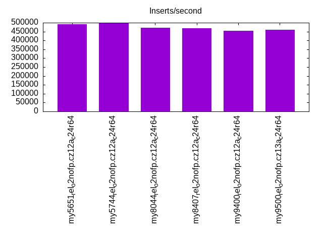
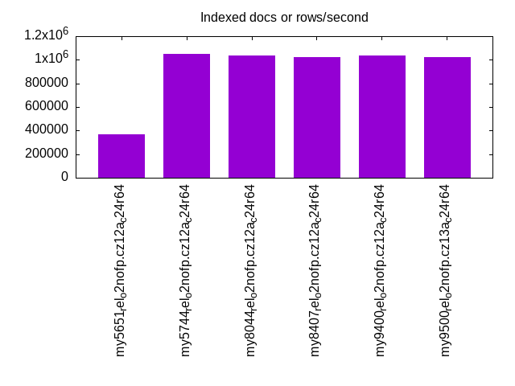
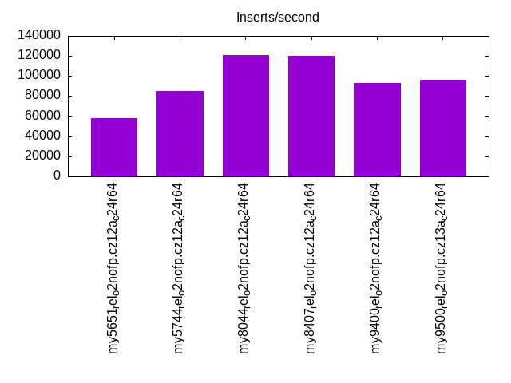
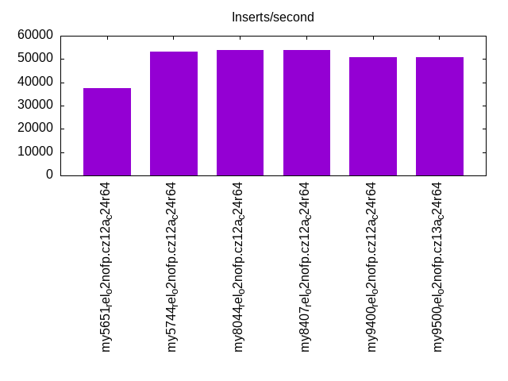
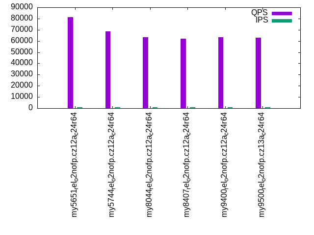
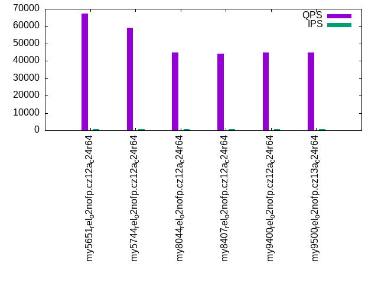
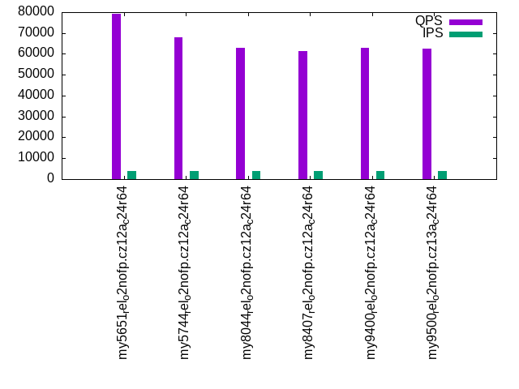
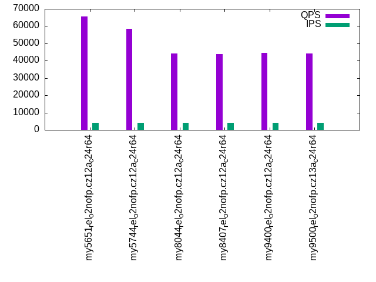
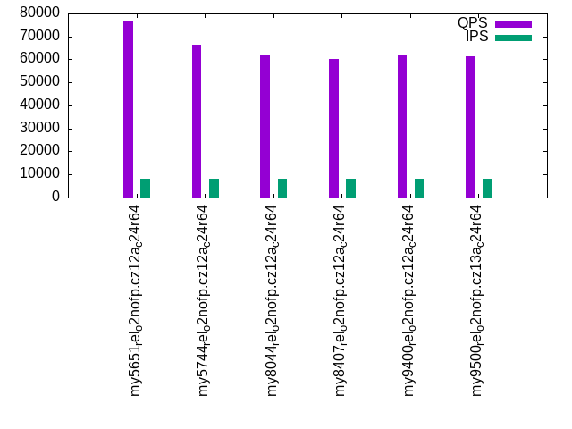
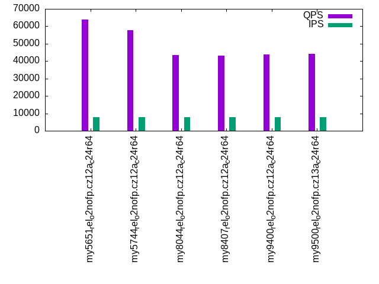

This is a report for the insert benchmark with 80M docs and 8 client(s). It is generated by scripts (bash, awk, sed) and Tufte might not be impressed. An overview of the insert benchmark is here and a short update is here. Below, by DBMS, I mean DBMS+version.config. An example is my8020.c10b40 where my means MySQL, 8020 is version 8.0.20 and c10b40 is the name for the configuration file.
The test server has 24 cores, 2 sockets, 64G RAM and 1 NVMe devices. The benchmark was run with 8 clients and there were 1 or 3 connections per client (1 for queries or inserts without rate limits, 1+1 for rate limited inserts+deletes). It uses 8 tables with a table per client. It loads 10M rows per table without secondary indexes, creates 3 secondary indexes per table, then inserts 16m+4m rows per table with a delete per insert to avoid growing the table. It then does 6 read+write tests for 1800s each that do queries as fast as possible with 100,100,500,500,1000,1000 inserts/s and the same for deletes/s per client concurrent with the queries. The database is cached by InnoDB. Clients and the DBMS share one server.
The tested DBMS are:
The numbers are inserts/s for l.i0, l.i1 and l.i2, indexed docs (or rows) /s for l.x and queries/s for qr100, qp100 thru qr1000, qp1000" The values are the average rate over the entire test for inserts (IPS) and queries (QPS). The range of values for IPS and QPS is split into 3 parts: bottom 25%, middle 50%, top 25%. Values in the bottom 25% have a red background, values in the top 25% have a green background and values in the middle have no color. A gray background is used for values that can be ignored because the DBMS did not sustain the target insert rate. Red backgrounds are not used when the minimum value is within 80% of the max value.
| dbms | l.i0 | l.x | l.i1 | l.i2 | qr100 | qp100 | qr500 | qp500 | qr1000 | qp1000 |
|---|---|---|---|---|---|---|---|---|---|---|
| my5651_rel_o2nofp.cz12a_c24r64 | 490798 | 365297 | 57736 | 37603 | 81244 | 67356 | 79062 | 65649 | 76472 | 64046 |
| my5744_rel_o2nofp.cz12a_c24r64 | 496894 | 1052633 | 84768 | 53244 | 68643 | 59281 | 67989 | 58510 | 66585 | 57803 |
| my8044_rel_o2nofp.cz12a_c24r64 | 470588 | 1038962 | 120869 | 53963 | 63497 | 44909 | 62878 | 44271 | 61859 | 43627 |
| my8407_rel_o2nofp.cz12a_c24r64 | 467836 | 1025642 | 119738 | 53782 | 61985 | 44306 | 61535 | 43764 | 60208 | 43030 |
| my9400_rel_o2nofp.cz12a_c24r64 | 454545 | 1038962 | 93091 | 50955 | 63519 | 44922 | 62976 | 44358 | 61766 | 43796 |
| my9500_rel_o2nofp.cz13a_c24r64 | 459770 | 1025642 | 96096 | 50713 | 62928 | 44873 | 62401 | 44208 | 61407 | 44144 |
This table has relative throughput, throughput for the DBMS relative to the DBMS in the first line, using the absolute throughput from the previous table. Values less than 0.95 have a yellow background. Values greater than 1.05 have a blue background.
| dbms | l.i0 | l.x | l.i1 | l.i2 | qr100 | qp100 | qr500 | qp500 | qr1000 | qp1000 |
|---|---|---|---|---|---|---|---|---|---|---|
| my5651_rel_o2nofp.cz12a_c24r64 | 1.00 | 1.00 | 1.00 | 1.00 | 1.00 | 1.00 | 1.00 | 1.00 | 1.00 | 1.00 |
| my5744_rel_o2nofp.cz12a_c24r64 | 1.01 | 2.88 | 1.47 | 1.42 | 0.84 | 0.88 | 0.86 | 0.89 | 0.87 | 0.90 |
| my8044_rel_o2nofp.cz12a_c24r64 | 0.96 | 2.84 | 2.09 | 1.44 | 0.78 | 0.67 | 0.80 | 0.67 | 0.81 | 0.68 |
| my8407_rel_o2nofp.cz12a_c24r64 | 0.95 | 2.81 | 2.07 | 1.43 | 0.76 | 0.66 | 0.78 | 0.67 | 0.79 | 0.67 |
| my9400_rel_o2nofp.cz12a_c24r64 | 0.93 | 2.84 | 1.61 | 1.36 | 0.78 | 0.67 | 0.80 | 0.68 | 0.81 | 0.68 |
| my9500_rel_o2nofp.cz13a_c24r64 | 0.94 | 2.81 | 1.66 | 1.35 | 0.77 | 0.67 | 0.79 | 0.67 | 0.80 | 0.69 |
This lists the average rate of inserts/s for the tests that do inserts concurrent with queries. For such tests the query rate is listed in the table above. The read+write tests are setup so that the insert rate should match the target rate every second. Cells that are not at least 95% of the target have a red background to indicate a failure to satisfy the target.
| dbms | qr100.L1 | qp100.L2 | qr500.L3 | qp500.L4 | qr1000.L5 | qp1000.L6 |
|---|---|---|---|---|---|---|
| my5651_rel_o2nofp.cz12a_c24r64 | 796 | 797 | 3982 | 3982 | 7969 | 7969 |
| my5744_rel_o2nofp.cz12a_c24r64 | 796 | 797 | 3984 | 3982 | 7965 | 7965 |
| my8044_rel_o2nofp.cz12a_c24r64 | 796 | 796 | 3984 | 3984 | 7969 | 7969 |
| my8407_rel_o2nofp.cz12a_c24r64 | 796 | 797 | 3982 | 3982 | 7969 | 7965 |
| my9400_rel_o2nofp.cz12a_c24r64 | 797 | 797 | 3982 | 3984 | 7965 | 7960 |
| my9500_rel_o2nofp.cz13a_c24r64 | 797 | 797 | 3982 | 3984 | 7969 | 7938 |
| target | 800 | 800 | 4000 | 4000 | 8000 | 8000 |
l.i0: load without secondary indexes. Graphs for performance per 1-second interval are here.
Average throughput:
Insert response time histogram: each cell has the percentage of responses that take <= the time in the header and max is the max response time in seconds. For the max column values in the top 25% of the range have a red background and in the bottom 25% of the range have a green background. The red background is not used when the min value is within 80% of the max value.
| dbms | 256us | 1ms | 4ms | 16ms | 64ms | 256ms | 1s | 4s | 16s | gt | max |
|---|---|---|---|---|---|---|---|---|---|---|---|
| my5651_rel_o2nofp.cz12a_c24r64 | 3.511 | 96.279 | 0.059 | 0.137 | 0.014 | 0.229 | |||||
| my5744_rel_o2nofp.cz12a_c24r64 | 3.535 | 96.362 | 0.077 | 0.012 | 0.013 | 0.001 | 0.265 | ||||
| my8044_rel_o2nofp.cz12a_c24r64 | 99.793 | 0.179 | 0.014 | 0.011 | 0.003 | 0.262 | |||||
| my8407_rel_o2nofp.cz12a_c24r64 | 99.786 | 0.187 | 0.013 | 0.014 | 0.243 | ||||||
| my9400_rel_o2nofp.cz12a_c24r64 | 99.814 | 0.160 | 0.011 | 0.015 | 0.245 | ||||||
| my9500_rel_o2nofp.cz13a_c24r64 | 99.811 | 0.154 | 0.018 | 0.016 | 0.001 | 0.263 |
Performance metrics for the DBMS listed above. Some are normalized by throughput, others are not. Legend for results is here.
ips qps rps rmbps wps wmbps rpq rkbpq wpi wkbpi csps cpups cspq cpupq dbgb1 dbgb2 rss maxop p50 p99 tag 490798 0 143 0.6 1456.8 127.7 0.000 0.001 0.003 0.267 62074 39.1 0.126 19 5.3 55.8 8.0 0.229 66592 50794 my5651_rel_o2nofp.cz12a_c24r64 496894 0 0 0.0 1732.4 135.6 0.000 0.000 0.003 0.279 61504 40.5 0.124 20 5.3 55.8 8.7 0.265 71991 52193 my5744_rel_o2nofp.cz12a_c24r64 470588 0 0 0.0 1784.0 136.9 0.000 0.000 0.004 0.298 89025 44.4 0.189 23 5.3 55.9 8.7 0.262 65493 51094 my8044_rel_o2nofp.cz12a_c24r64 467836 0 0 0.0 1769.4 136.3 0.000 0.000 0.004 0.298 89008 44.8 0.190 23 5.3 59.6 8.6 0.243 63892 49891 my8407_rel_o2nofp.cz12a_c24r64 454545 0 0 0.0 1769.1 133.7 0.000 0.000 0.004 0.301 60816 39.9 0.134 21 5.3 59.6 9.4 0.245 64991 44692 my9400_rel_o2nofp.cz12a_c24r64 459770 0 0 0.0 1759.3 135.4 0.000 0.000 0.004 0.302 62170 40.3 0.135 21 5.3 59.6 8.7 0.263 65292 50094 my9500_rel_o2nofp.cz13a_c24r64
Average values from iostat.
r/s rkB/s rrqm/s %rrqm r_await rareq-s w/s wkB/s wrqm/s %wrqm w_await wareq-s d/s dkB/s drqm/s %drqm d_await dareq-s f/s f_await aqu-sz %util 142.7 571.4 0.000 0.000 4.829 3.751 1456.8 130816 21.79 1.821 9.179 100.7 0.369 6.400 0.000 0.000 0.114 4.848 0.000 0.000 12.84 9.189 my5651_rel_o2nofp.cz12a_c24r64 0.462 2.000 0.000 0.000 2.742 4.250 1732.4 138820 70.99 5.308 7.192 87.21 0.856 11.50 0.000 0.000 0.140 3.975 0.000 0.000 12.26 8.435 my5744_rel_o2nofp.cz12a_c24r64 0.424 1.976 0.000 0.000 2.738 4.353 1784.0 140171 76.04 5.811 8.186 85.37 0.418 4.518 0.000 0.000 0.152 5.440 0.000 0.000 15.31 9.047 my8044_rel_o2nofp.cz12a_c24r64 0.400 1.671 0.000 0.000 2.902 4.000 1769.4 139607 76.71 5.918 8.452 85.70 0.471 7.129 0.000 0.000 0.160 5.343 0.000 0.000 15.54 9.024 my8407_rel_o2nofp.cz12a_c24r64 0.389 1.691 0.000 0.000 2.347 3.943 1769.1 136931 71.68 5.573 7.251 84.08 0.617 9.920 0.000 0.000 0.166 6.520 0.000 0.000 13.55 8.893 my9400_rel_o2nofp.cz12a_c24r64 0.453 2.235 0.000 0.000 3.529 4.206 1759.3 138623 72.90 5.667 7.551 85.66 0.518 22.85 0.000 0.000 0.145 14.44 0.000 0.000 14.17 8.847 my9500_rel_o2nofp.cz13a_c24r64
l.x: create secondary indexes.
Average throughput:
Performance metrics for the DBMS listed above. Some are normalized by throughput, others are not. Legend for results is here.
ips qps rps rmbps wps wmbps rpq rkbpq wpi wkbpi csps cpups cspq cpupq dbgb1 dbgb2 rss maxop p50 p99 tag 365297 0 0 0.0 26341.1 790.7 0.000 0.000 0.072 2.216 51939 30.3 0.142 20 11.2 61.7 14.2 0.002 NA NA my5651_rel_o2nofp.cz12a_c24r64 1052633 0 1 0.0 17432.1 935.7 0.000 0.000 0.017 0.910 83989 29.3 0.080 7 12.2 62.7 12.9 0.040 NA NA my5744_rel_o2nofp.cz12a_c24r64 1038962 0 27 0.7 32140.2 1224.9 0.000 0.001 0.031 1.207 67178 62.0 0.065 14 12.1 62.8 12.1 0.005 NA NA my8044_rel_o2nofp.cz12a_c24r64 1025642 0 24 0.8 31439.9 1216.4 0.000 0.001 0.031 1.214 69039 64.5 0.067 15 12.1 66.5 11.8 0.005 NA NA my8407_rel_o2nofp.cz12a_c24r64 1038962 0 26 0.7 32711.7 1235.8 0.000 0.001 0.031 1.218 66304 59.0 0.064 14 12.1 66.5 12.0 0.002 NA NA my9400_rel_o2nofp.cz12a_c24r64 1025642 0 28 0.8 31895.6 1223.3 0.000 0.001 0.031 1.221 69228 62.3 0.067 15 12.1 66.5 12.1 0.002 NA NA my9500_rel_o2nofp.cz13a_c24r64
Average values from iostat.
r/s rkB/s rrqm/s %rrqm r_await rareq-s w/s wkB/s wrqm/s %wrqm w_await wareq-s d/s dkB/s drqm/s %drqm d_await dareq-s f/s f_await aqu-sz %util 0.314 1.363 0.000 0.000 0.104 3.273 26341.1 809667 2851.9 8.785 0.297 38.08 3.867 31351.2 0.000 0.000 0.116 2754.4 0.000 0.000 4.415 45.39 my5651_rel_o2nofp.cz12a_c24r64 0.800 3.200 0.000 0.000 0.121 3.733 17432.1 958187 197.2 1.013 0.588 55.33 11.63 86001.1 0.000 0.000 0.268 4587.3 0.000 0.000 11.52 56.56 my5744_rel_o2nofp.cz12a_c24r64 26.78 731.8 0.000 0.000 0.496 27.30 32140.2 1254323 254.3 1.109 6.521 50.90 46.35 172713 0.000 0.000 0.857 2849.0 0.000 0.000 147.7 86.82 my8044_rel_o2nofp.cz12a_c24r64 23.92 804.2 0.000 0.000 0.313 31.82 31439.9 1245636 240.2 1.175 6.367 51.43 45.85 172629 0.027 0.031 1.053 2866.5 0.000 0.000 148.1 86.66 my8407_rel_o2nofp.cz12a_c24r64 26.16 720.8 0.000 0.000 0.281 27.98 32711.7 1265467 224.6 1.033 7.187 51.24 46.47 172706 0.000 0.000 1.433 2868.2 0.000 0.000 166.0 87.85 my9400_rel_o2nofp.cz12a_c24r64 27.84 857.1 0.000 0.000 0.448 31.29 31895.6 1252656 231.4 1.047 5.851 50.56 45.51 172627 0.000 0.000 0.637 2894.1 0.000 0.000 135.5 86.03 my9500_rel_o2nofp.cz13a_c24r64
l.i1: continue load after secondary indexes created with 50 inserts per transaction. Graphs for performance per 1-second interval are here.
Average throughput:
Insert response time histogram: each cell has the percentage of responses that take <= the time in the header and max is the max response time in seconds. For the max column values in the top 25% of the range have a red background and in the bottom 25% of the range have a green background. The red background is not used when the min value is within 80% of the max value.
| dbms | 256us | 1ms | 4ms | 16ms | 64ms | 256ms | 1s | 4s | 16s | gt | max |
|---|---|---|---|---|---|---|---|---|---|---|---|
| my5651_rel_o2nofp.cz12a_c24r64 | 1.127 | 98.001 | 0.812 | 0.060 | nonzero | 0.271 | |||||
| my5744_rel_o2nofp.cz12a_c24r64 | 50.356 | 49.592 | 0.036 | 0.016 | 0.256 | ||||||
| my8044_rel_o2nofp.cz12a_c24r64 | 94.906 | 4.454 | 0.614 | 0.021 | 0.004 | 0.349 | |||||
| my8407_rel_o2nofp.cz12a_c24r64 | 94.673 | 4.662 | 0.642 | 0.018 | 0.006 | 0.433 | |||||
| my9400_rel_o2nofp.cz12a_c24r64 | 95.260 | 3.021 | 0.652 | 1.062 | 0.005 | 0.384 | |||||
| my9500_rel_o2nofp.cz13a_c24r64 | 95.471 | 2.913 | 0.656 | 0.957 | 0.003 | 0.378 |
Delete response time histogram: each cell has the percentage of responses that take <= the time in the header and max is the max response time in seconds. For the max column values in the top 25% of the range have a red background and in the bottom 25% of the range have a green background. The red background is not used when the min value is within 80% of the max value.
| dbms | 256us | 1ms | 4ms | 16ms | 64ms | 256ms | 1s | 4s | 16s | gt | max |
|---|---|---|---|---|---|---|---|---|---|---|---|
| my5651_rel_o2nofp.cz12a_c24r64 | 4.276 | 95.014 | 0.661 | 0.049 | nonzero | 0.259 | |||||
| my5744_rel_o2nofp.cz12a_c24r64 | 42.056 | 57.907 | 0.024 | 0.014 | 0.252 | ||||||
| my8044_rel_o2nofp.cz12a_c24r64 | 97.277 | 2.309 | 0.394 | 0.016 | 0.004 | 0.350 | |||||
| my8407_rel_o2nofp.cz12a_c24r64 | 97.219 | 2.354 | 0.407 | 0.015 | 0.005 | 0.439 | |||||
| my9400_rel_o2nofp.cz12a_c24r64 | 97.106 | 1.489 | 0.398 | 1.003 | 0.004 | 0.386 | |||||
| my9500_rel_o2nofp.cz13a_c24r64 | 97.278 | 1.414 | 0.404 | 0.902 | 0.003 | 0.376 |
Performance metrics for the DBMS listed above. Some are normalized by throughput, others are not. Legend for results is here.
ips qps rps rmbps wps wmbps rpq rkbpq wpi wkbpi csps cpups cspq cpupq dbgb1 dbgb2 rss maxop p50 p99 tag 57736 0 1494 5.8 3908.1 156.8 0.026 0.104 0.068 2.782 140801 73.0 2.439 303 19.0 69.8 22.5 0.271 7099 3799 my5651_rel_o2nofp.cz12a_c24r64 84768 0 0 0.0 4960.7 191.9 0.000 0.000 0.059 2.318 47724 87.0 0.563 246 20.0 71.2 24.0 0.256 11987 8299 my5744_rel_o2nofp.cz12a_c24r64 120869 0 366 5.7 6695.0 272.8 0.003 0.048 0.055 2.311 105852 81.6 0.876 162 20.1 71.9 24.6 0.349 15875 4949 my8044_rel_o2nofp.cz12a_c24r64 119738 0 362 5.7 6735.1 274.4 0.003 0.048 0.056 2.347 104437 81.5 0.872 163 19.9 87.7 24.3 0.433 15598 5949 my8407_rel_o2nofp.cz12a_c24r64 93091 0 281 4.4 6957.1 293.8 0.003 0.048 0.075 3.231 56407 63.0 0.606 162 18.1 85.3 22.3 0.384 11848 5799 my9400_rel_o2nofp.cz12a_c24r64 96096 0 290 4.5 7052.5 298.0 0.003 0.048 0.073 3.176 58961 64.8 0.614 162 18.1 85.3 22.4 0.378 12248 5749 my9500_rel_o2nofp.cz13a_c24r64
Average values from iostat.
r/s rkB/s rrqm/s %rrqm r_await rareq-s w/s wkB/s wrqm/s %wrqm w_await wareq-s d/s dkB/s drqm/s %drqm d_await dareq-s f/s f_await aqu-sz %util 1494.2 5976.8 0.000 0.000 0.086 3.648 3908.1 160592 72.27 1.825 1.329 41.20 0.102 1.885 0.000 0.000 0.063 4.530 0.000 0.000 5.220 18.95 my5651_rel_o2nofp.cz12a_c24r64 0.125 0.527 0.007 0.255 1.097 1.276 4960.7 196512 101.4 1.997 1.173 39.52 0.140 0.882 0.000 0.000 0.046 0.960 0.000 0.000 5.977 11.22 my5744_rel_o2nofp.cz12a_c24r64 365.9 5852.1 0.000 0.000 1.497 10.28 6695.0 279301 44.71 0.656 7.743 42.51 0.191 20.41 0.000 0.000 0.085 26.84 0.000 0.000 50.73 20.27 my8044_rel_o2nofp.cz12a_c24r64 362.4 5796.5 0.000 0.000 1.205 10.28 6735.1 281023 49.58 0.714 7.722 42.58 0.216 14.05 0.000 0.000 0.087 13.00 0.000 0.000 50.84 20.31 my8407_rel_o2nofp.cz12a_c24r64 280.7 4489.8 0.000 0.000 0.831 10.14 6957.1 300813 26.93 0.356 8.229 43.93 0.148 10.21 0.000 0.000 0.060 12.04 0.000 0.000 56.23 21.54 my9400_rel_o2nofp.cz12a_c24r64 290.2 4641.9 0.000 0.000 1.018 10.25 7052.5 305191 28.15 0.375 8.195 43.97 0.159 14.79 0.000 0.000 0.058 17.70 0.000 0.000 56.92 21.80 my9500_rel_o2nofp.cz13a_c24r64
l.i2: continue load after secondary indexes created with 5 inserts per transaction. Graphs for performance per 1-second interval are here.
Average throughput:
Insert response time histogram: each cell has the percentage of responses that take <= the time in the header and max is the max response time in seconds. For the max column values in the top 25% of the range have a red background and in the bottom 25% of the range have a green background. The red background is not used when the min value is within 80% of the max value.
| dbms | 256us | 1ms | 4ms | 16ms | 64ms | 256ms | 1s | 4s | 16s | gt | max |
|---|---|---|---|---|---|---|---|---|---|---|---|
| my5651_rel_o2nofp.cz12a_c24r64 | 0.026 | 63.716 | 35.999 | 0.052 | 0.206 | 0.001 | 0.077 | ||||
| my5744_rel_o2nofp.cz12a_c24r64 | 0.077 | 92.434 | 7.343 | 0.024 | 0.119 | 0.003 | 0.235 | ||||
| my8044_rel_o2nofp.cz12a_c24r64 | nonzero | 93.796 | 5.856 | 0.280 | 0.065 | 0.002 | 0.001 | 0.319 | |||
| my8407_rel_o2nofp.cz12a_c24r64 | 93.696 | 6.041 | 0.192 | 0.068 | 0.002 | 0.001 | 0.321 | ||||
| my9400_rel_o2nofp.cz12a_c24r64 | 96.698 | 3.065 | 0.062 | 0.045 | 0.128 | 0.001 | 0.296 | ||||
| my9500_rel_o2nofp.cz13a_c24r64 | 96.920 | 2.835 | 0.060 | 0.048 | 0.138 | nonzero | 0.298 |
Delete response time histogram: each cell has the percentage of responses that take <= the time in the header and max is the max response time in seconds. For the max column values in the top 25% of the range have a red background and in the bottom 25% of the range have a green background. The red background is not used when the min value is within 80% of the max value.
| dbms | 256us | 1ms | 4ms | 16ms | 64ms | 256ms | 1s | 4s | 16s | gt | max |
|---|---|---|---|---|---|---|---|---|---|---|---|
| my5651_rel_o2nofp.cz12a_c24r64 | 0.032 | 64.324 | 35.386 | 0.051 | 0.206 | 0.001 | 0.076 | ||||
| my5744_rel_o2nofp.cz12a_c24r64 | 0.074 | 91.718 | 8.066 | 0.020 | 0.119 | 0.003 | 0.235 | ||||
| my8044_rel_o2nofp.cz12a_c24r64 | 0.007 | 94.824 | 4.871 | 0.244 | 0.051 | 0.002 | 0.001 | 0.320 | |||
| my8407_rel_o2nofp.cz12a_c24r64 | nonzero | 94.859 | 4.927 | 0.155 | 0.056 | 0.002 | 0.001 | 0.320 | |||
| my9400_rel_o2nofp.cz12a_c24r64 | nonzero | 97.289 | 2.496 | 0.052 | 0.035 | 0.127 | 0.001 | 0.294 | |||
| my9500_rel_o2nofp.cz13a_c24r64 | 0.004 | 97.361 | 2.409 | 0.051 | 0.038 | 0.137 | nonzero | 0.297 |
Performance metrics for the DBMS listed above. Some are normalized by throughput, others are not. Legend for results is here.
ips qps rps rmbps wps wmbps rpq rkbpq wpi wkbpi csps cpups cspq cpupq dbgb1 dbgb2 rss maxop p50 p99 tag 37603 0 5937 23.2 3378.8 131.7 0.158 0.632 0.090 3.586 241716 76.5 6.428 488 19.0 69.8 22.6 0.077 4894 170 my5651_rel_o2nofp.cz12a_c24r64 53244 0 0 0.0 4789.2 187.9 0.000 0.000 0.090 3.613 231359 76.2 4.345 343 20.0 71.2 24.3 0.235 7224 185 my5744_rel_o2nofp.cz12a_c24r64 53963 0 0 0.0 5079.9 200.9 0.000 0.000 0.094 3.813 295349 72.4 5.473 322 20.1 71.9 24.8 0.319 7354 1225 my8044_rel_o2nofp.cz12a_c24r64 53782 0 0 0.0 5064.6 199.9 0.000 0.000 0.094 3.806 295766 71.8 5.499 320 19.9 93.9 24.5 0.321 7204 1300 my8407_rel_o2nofp.cz12a_c24r64 50955 0 0 0.0 4337.2 174.2 0.000 0.000 0.085 3.501 252009 60.1 4.946 283 18.1 91.4 22.3 0.296 6434 4178 my9400_rel_o2nofp.cz12a_c24r64 50713 0 0 0.0 4331.2 173.6 0.000 0.000 0.085 3.506 249503 58.9 4.920 279 18.1 91.5 22.5 0.298 6504 840 my9500_rel_o2nofp.cz13a_c24r64
Average values from iostat.
r/s rkB/s rrqm/s %rrqm r_await rareq-s w/s wkB/s wrqm/s %wrqm w_await wareq-s d/s dkB/s drqm/s %drqm d_await dareq-s f/s f_await aqu-sz %util 5936.7 23746.8 0.000 0.000 0.021 4.000 3378.8 134851 47.38 1.384 0.931 39.91 0.135 1.398 0.000 0.000 0.067 2.063 0.000 0.000 3.262 17.27 my5651_rel_o2nofp.cz12a_c24r64 0.085 0.340 0.000 0.000 1.935 0.867 4789.2 192362 63.95 1.325 1.423 40.12 0.158 1.313 0.000 0.000 0.059 1.363 0.000 0.000 6.941 11.46 my5744_rel_o2nofp.cz12a_c24r64 0.075 0.298 0.000 0.000 0.977 1.085 5079.9 205742 3.151 0.061 8.232 40.50 0.125 5.925 0.000 0.000 0.063 6.503 0.000 0.000 41.97 14.26 my8044_rel_o2nofp.cz12a_c24r64 0.121 0.484 0.000 0.000 1.858 1.445 5064.6 204716 3.333 0.065 7.845 40.40 0.163 6.205 0.000 0.000 0.058 6.769 0.000 0.000 39.87 14.13 my8407_rel_o2nofp.cz12a_c24r64 0.107 0.429 0.000 0.000 2.186 1.376 4337.2 178416 3.202 0.072 7.281 41.12 0.195 14.04 0.000 0.000 0.063 14.64 0.000 0.000 31.72 12.13 my9400_rel_o2nofp.cz12a_c24r64 0.090 0.362 0.000 0.000 2.220 1.143 4331.2 177797 3.271 0.073 7.337 41.07 0.163 3.581 0.000 0.000 0.069 3.148 0.000 0.000 31.88 12.09 my9500_rel_o2nofp.cz13a_c24r64
qr100.L1: range queries with 100 insert/s per client. Graphs for performance per 1-second interval are here.
Average throughput:
Query response time histogram: each cell has the percentage of responses that take <= the time in the header and max is the max response time in seconds. For max values in the top 25% of the range have a red background and in the bottom 25% of the range have a green background. The red background is not used when the min value is within 80% of the max value.
| dbms | 256us | 1ms | 4ms | 16ms | 64ms | 256ms | 1s | 4s | 16s | gt | max |
|---|---|---|---|---|---|---|---|---|---|---|---|
| my5651_rel_o2nofp.cz12a_c24r64 | 99.969 | 0.029 | 0.002 | nonzero | 0.008 | ||||||
| my5744_rel_o2nofp.cz12a_c24r64 | 99.988 | 0.012 | nonzero | nonzero | 0.009 | ||||||
| my8044_rel_o2nofp.cz12a_c24r64 | 99.982 | 0.018 | nonzero | 0.004 | |||||||
| my8407_rel_o2nofp.cz12a_c24r64 | 99.974 | 0.026 | nonzero | 0.004 | |||||||
| my9400_rel_o2nofp.cz12a_c24r64 | 99.981 | 0.019 | nonzero | nonzero | 0.004 | ||||||
| my9500_rel_o2nofp.cz13a_c24r64 | 99.978 | 0.022 | nonzero | nonzero | 0.007 |
Insert response time histogram: each cell has the percentage of responses that take <= the time in the header and max is the max response time in seconds. For max values in the top 25% of the range have a red background and in the bottom 25% of the range have a green background. The red background is not used when the min value is within 80% of the max value.
| dbms | 256us | 1ms | 4ms | 16ms | 64ms | 256ms | 1s | 4s | 16s | gt | max |
|---|---|---|---|---|---|---|---|---|---|---|---|
| my5651_rel_o2nofp.cz12a_c24r64 | 70.306 | 29.691 | 0.003 | 0.017 | |||||||
| my5744_rel_o2nofp.cz12a_c24r64 | 99.188 | 0.812 | 0.009 | ||||||||
| my8044_rel_o2nofp.cz12a_c24r64 | 99.899 | 0.101 | 0.005 | ||||||||
| my8407_rel_o2nofp.cz12a_c24r64 | 99.840 | 0.160 | 0.005 | ||||||||
| my9400_rel_o2nofp.cz12a_c24r64 | 99.597 | 0.128 | 0.274 | 0.105 | |||||||
| my9500_rel_o2nofp.cz13a_c24r64 | 99.920 | 0.007 | 0.021 | 0.052 | 0.104 |
Delete response time histogram: each cell has the percentage of responses that take <= the time in the header and max is the max response time in seconds. For max values in the top 25% of the range have a red background and in the bottom 25% of the range have a green background. The red background is not used when the min value is within 80% of the max value.
| dbms | 256us | 1ms | 4ms | 16ms | 64ms | 256ms | 1s | 4s | 16s | gt | max |
|---|---|---|---|---|---|---|---|---|---|---|---|
| my5651_rel_o2nofp.cz12a_c24r64 | 84.774 | 15.215 | 0.010 | 0.018 | |||||||
| my5744_rel_o2nofp.cz12a_c24r64 | 99.490 | 0.510 | 0.010 | ||||||||
| my8044_rel_o2nofp.cz12a_c24r64 | 99.958 | 0.042 | 0.004 | ||||||||
| my8407_rel_o2nofp.cz12a_c24r64 | 99.931 | 0.069 | 0.007 | ||||||||
| my9400_rel_o2nofp.cz12a_c24r64 | 99.712 | 0.035 | 0.253 | 0.104 | |||||||
| my9500_rel_o2nofp.cz13a_c24r64 | 99.931 | 0.021 | 0.049 | 0.102 |
Performance metrics for the DBMS listed above. Some are normalized by throughput, others are not. Legend for results is here.
ips qps rps rmbps wps wmbps rpq rkbpq wpi wkbpi csps cpups cspq cpupq dbgb1 dbgb2 rss maxop p50 p99 tag 796 81244 28 0.1 4052.9 112.8 0.000 0.001 5.089 145.075 468141 33.8 5.762 100 19.0 69.8 22.6 0.008 10159 9743 my5651_rel_o2nofp.cz12a_c24r64 796 68643 0 0.0 850.9 24.1 0.000 0.000 1.068 30.950 394924 34.5 5.753 121 20.0 71.2 24.3 0.009 8622 8143 my5744_rel_o2nofp.cz12a_c24r64 796 63497 0 0.0 986.7 28.0 0.000 0.000 1.239 35.969 366348 33.7 5.770 127 20.1 71.9 24.8 0.004 7999 7823 my8044_rel_o2nofp.cz12a_c24r64 796 61985 0 0.0 1009.1 28.6 0.000 0.000 1.267 36.767 357719 33.7 5.771 130 19.9 94.0 24.5 0.004 7807 7423 my8407_rel_o2nofp.cz12a_c24r64 797 63519 0 0.0 974.7 27.7 0.000 0.000 1.223 35.536 366046 33.8 5.763 128 18.1 91.6 22.3 0.004 7999 7839 my9400_rel_o2nofp.cz12a_c24r64 797 62928 0 0.0 848.4 24.1 0.000 0.000 1.065 31.028 362292 33.5 5.757 128 18.1 91.6 22.5 0.007 7945 7727 my9500_rel_o2nofp.cz13a_c24r64
Average values from iostat.
r/s rkB/s rrqm/s %rrqm r_await rareq-s w/s wkB/s wrqm/s %wrqm w_await wareq-s d/s dkB/s drqm/s %drqm d_await dareq-s f/s f_await aqu-sz %util 28.26 113.1 0.000 0.000 0.081 4.001 4052.9 115537 14.60 6.727 0.110 34.58 0.001 0.007 0.000 0.000 0.000 0.033 0.000 0.000 0.700 5.325 my5651_rel_o2nofp.cz12a_c24r64 0.004 0.051 0.000 0.000 0.001 0.069 850.9 24648.3 4.751 1.752 0.083 30.16 0.001 0.007 0.000 0.000 0.000 0.033 0.000 0.000 0.101 1.583 my5744_rel_o2nofp.cz12a_c24r64 0.000 0.000 0.000 0.000 0.000 0.000 986.7 28645.6 1.079 0.358 2.699 30.45 0.001 0.816 0.000 0.000 0.003 4.078 0.000 0.000 5.502 2.210 my8044_rel_o2nofp.cz12a_c24r64 0.001 0.004 0.000 0.000 0.003 0.022 1009.1 29281.2 1.133 0.425 2.602 30.71 0.011 0.042 0.000 0.000 0.017 0.188 0.000 0.000 5.642 2.822 my8407_rel_o2nofp.cz12a_c24r64 0.001 0.004 0.000 0.000 0.000 0.022 974.7 28318.4 1.130 0.433 2.592 30.78 0.008 2.185 0.000 0.000 0.009 10.30 0.000 0.000 5.563 1.888 my9400_rel_o2nofp.cz12a_c24r64 0.001 0.004 0.000 0.000 0.000 0.022 848.4 24726.2 1.117 0.468 2.156 31.02 0.008 0.031 0.000 0.000 0.009 0.133 0.000 0.000 4.657 4.165 my9500_rel_o2nofp.cz13a_c24r64
qp100.L2: point queries with 100 insert/s per client. Graphs for performance per 1-second interval are here.
Average throughput:
Query response time histogram: each cell has the percentage of responses that take <= the time in the header and max is the max response time in seconds. For max values in the top 25% of the range have a red background and in the bottom 25% of the range have a green background. The red background is not used when the min value is within 80% of the max value.
| dbms | 256us | 1ms | 4ms | 16ms | 64ms | 256ms | 1s | 4s | 16s | gt | max |
|---|---|---|---|---|---|---|---|---|---|---|---|
| my5651_rel_o2nofp.cz12a_c24r64 | 99.956 | 0.042 | 0.002 | nonzero | 0.008 | ||||||
| my5744_rel_o2nofp.cz12a_c24r64 | 99.973 | 0.026 | nonzero | nonzero | 0.009 | ||||||
| my8044_rel_o2nofp.cz12a_c24r64 | 99.883 | 0.117 | nonzero | 0.003 | |||||||
| my8407_rel_o2nofp.cz12a_c24r64 | 99.855 | 0.145 | nonzero | nonzero | 0.004 | ||||||
| my9400_rel_o2nofp.cz12a_c24r64 | 99.864 | 0.136 | nonzero | nonzero | 0.005 | ||||||
| my9500_rel_o2nofp.cz13a_c24r64 | 99.871 | 0.129 | nonzero | 0.004 |
Insert response time histogram: each cell has the percentage of responses that take <= the time in the header and max is the max response time in seconds. For max values in the top 25% of the range have a red background and in the bottom 25% of the range have a green background. The red background is not used when the min value is within 80% of the max value.
| dbms | 256us | 1ms | 4ms | 16ms | 64ms | 256ms | 1s | 4s | 16s | gt | max |
|---|---|---|---|---|---|---|---|---|---|---|---|
| my5651_rel_o2nofp.cz12a_c24r64 | 75.625 | 24.354 | 0.021 | 0.019 | |||||||
| my5744_rel_o2nofp.cz12a_c24r64 | 99.792 | 0.208 | 0.006 | ||||||||
| my8044_rel_o2nofp.cz12a_c24r64 | 99.840 | 0.160 | 0.014 | ||||||||
| my8407_rel_o2nofp.cz12a_c24r64 | 99.906 | 0.094 | 0.006 | ||||||||
| my9400_rel_o2nofp.cz12a_c24r64 | 99.649 | 0.184 | 0.167 | 0.107 | |||||||
| my9500_rel_o2nofp.cz13a_c24r64 | 99.486 | 0.236 | 0.278 | 0.105 |
Delete response time histogram: each cell has the percentage of responses that take <= the time in the header and max is the max response time in seconds. For max values in the top 25% of the range have a red background and in the bottom 25% of the range have a green background. The red background is not used when the min value is within 80% of the max value.
| dbms | 256us | 1ms | 4ms | 16ms | 64ms | 256ms | 1s | 4s | 16s | gt | max |
|---|---|---|---|---|---|---|---|---|---|---|---|
| my5651_rel_o2nofp.cz12a_c24r64 | 87.208 | 12.785 | 0.007 | 0.017 | |||||||
| my5744_rel_o2nofp.cz12a_c24r64 | 99.892 | 0.108 | 0.005 | ||||||||
| my8044_rel_o2nofp.cz12a_c24r64 | 99.927 | 0.073 | 0.013 | ||||||||
| my8407_rel_o2nofp.cz12a_c24r64 | 99.997 | 0.003 | 0.004 | ||||||||
| my9400_rel_o2nofp.cz12a_c24r64 | 99.753 | 0.080 | 0.167 | 0.107 | |||||||
| my9500_rel_o2nofp.cz13a_c24r64 | 99.708 | 0.028 | 0.264 | 0.105 |
Performance metrics for the DBMS listed above. Some are normalized by throughput, others are not. Legend for results is here.
ips qps rps rmbps wps wmbps rpq rkbpq wpi wkbpi csps cpups cspq cpupq dbgb1 dbgb2 rss maxop p50 p99 tag 797 67356 29 0.1 4563.9 127.0 0.000 0.002 5.727 163.150 392496 33.7 5.827 120 19.0 69.8 22.6 0.008 8446 7967 my5651_rel_o2nofp.cz12a_c24r64 797 59281 0 0.0 78.6 2.6 0.000 0.000 0.099 3.365 344053 34.3 5.804 139 20.0 71.2 24.3 0.009 7503 7119 my5744_rel_o2nofp.cz12a_c24r64 796 44909 0 0.0 81.0 2.8 0.000 0.000 0.102 3.645 261687 33.4 5.827 178 20.1 71.9 24.8 0.003 5647 5215 my8044_rel_o2nofp.cz12a_c24r64 797 44306 0 0.0 88.5 3.0 0.000 0.000 0.111 3.884 257804 33.3 5.819 180 19.9 94.2 24.5 0.004 5567 5151 my8407_rel_o2nofp.cz12a_c24r64 797 44922 0 0.0 111.1 3.6 0.000 0.000 0.139 4.681 263529 33.3 5.866 178 18.1 91.7 22.3 0.005 5647 5343 my9400_rel_o2nofp.cz12a_c24r64 797 44873 0 0.0 83.8 2.9 0.000 0.000 0.105 3.785 260486 33.3 5.805 178 18.1 91.7 22.5 0.004 5647 5231 my9500_rel_o2nofp.cz13a_c24r64
Average values from iostat.
r/s rkB/s rrqm/s %rrqm r_await rareq-s w/s wkB/s wrqm/s %wrqm w_await wareq-s d/s dkB/s drqm/s %drqm d_await dareq-s f/s f_await aqu-sz %util 28.92 115.7 0.000 0.000 0.090 4.000 4563.9 130014 16.30 6.996 0.126 35.77 0.011 0.133 0.000 0.000 0.014 0.665 0.000 0.000 0.800 5.861 my5651_rel_o2nofp.cz12a_c24r64 0.000 0.000 0.000 0.000 0.000 0.000 78.57 2681.5 5.121 6.627 0.042 34.74 0.002 0.020 0.000 0.000 0.000 0.100 0.000 0.000 0.001 0.210 my5744_rel_o2nofp.cz12a_c24r64 0.001 0.002 0.000 0.000 0.000 0.011 80.98 2902.7 1.081 1.386 0.213 36.35 0.002 1.631 0.000 0.000 0.006 8.155 0.000 0.000 0.020 62.17 my8044_rel_o2nofp.cz12a_c24r64 0.001 0.004 0.000 0.000 0.000 0.022 88.47 3095.1 1.105 1.287 0.234 35.38 0.019 0.078 0.000 0.000 0.030 0.388 0.000 0.000 0.022 43.58 my8407_rel_o2nofp.cz12a_c24r64 0.001 0.004 0.000 0.000 0.000 0.022 111.1 3730.0 1.085 0.981 0.389 33.63 0.004 1.454 0.000 0.000 0.006 7.269 0.000 0.000 0.044 5.743 my9400_rel_o2nofp.cz12a_c24r64 0.001 0.004 0.000 0.000 0.000 0.022 83.78 3015.9 1.088 1.331 0.262 36.37 0.004 0.018 0.000 0.000 0.006 0.089 0.000 0.000 0.023 0.142 my9500_rel_o2nofp.cz13a_c24r64
qr500.L3: range queries with 500 insert/s per client. Graphs for performance per 1-second interval are here.
Average throughput:
Query response time histogram: each cell has the percentage of responses that take <= the time in the header and max is the max response time in seconds. For max values in the top 25% of the range have a red background and in the bottom 25% of the range have a green background. The red background is not used when the min value is within 80% of the max value.
| dbms | 256us | 1ms | 4ms | 16ms | 64ms | 256ms | 1s | 4s | 16s | gt | max |
|---|---|---|---|---|---|---|---|---|---|---|---|
| my5651_rel_o2nofp.cz12a_c24r64 | 99.843 | 0.151 | 0.006 | nonzero | 0.007 | ||||||
| my5744_rel_o2nofp.cz12a_c24r64 | 99.967 | 0.031 | 0.001 | nonzero | 0.009 | ||||||
| my8044_rel_o2nofp.cz12a_c24r64 | 99.951 | 0.048 | 0.001 | nonzero | 0.005 | ||||||
| my8407_rel_o2nofp.cz12a_c24r64 | 99.938 | 0.060 | 0.001 | nonzero | 0.005 | ||||||
| my9400_rel_o2nofp.cz12a_c24r64 | 99.958 | 0.041 | 0.001 | nonzero | 0.006 | ||||||
| my9500_rel_o2nofp.cz13a_c24r64 | 99.959 | 0.041 | 0.001 | nonzero | 0.006 |
Insert response time histogram: each cell has the percentage of responses that take <= the time in the header and max is the max response time in seconds. For max values in the top 25% of the range have a red background and in the bottom 25% of the range have a green background. The red background is not used when the min value is within 80% of the max value.
| dbms | 256us | 1ms | 4ms | 16ms | 64ms | 256ms | 1s | 4s | 16s | gt | max |
|---|---|---|---|---|---|---|---|---|---|---|---|
| my5651_rel_o2nofp.cz12a_c24r64 | 58.472 | 41.518 | 0.010 | 0.023 | |||||||
| my5744_rel_o2nofp.cz12a_c24r64 | 96.119 | 3.881 | 0.012 | ||||||||
| my8044_rel_o2nofp.cz12a_c24r64 | 98.448 | 1.552 | 0.012 | ||||||||
| my8407_rel_o2nofp.cz12a_c24r64 | 97.339 | 2.661 | 0.014 | ||||||||
| my9400_rel_o2nofp.cz12a_c24r64 | 99.172 | 0.673 | 0.156 | 0.106 | |||||||
| my9500_rel_o2nofp.cz13a_c24r64 | 99.427 | 0.484 | 0.011 | 0.078 | 0.106 |
Delete response time histogram: each cell has the percentage of responses that take <= the time in the header and max is the max response time in seconds. For max values in the top 25% of the range have a red background and in the bottom 25% of the range have a green background. The red background is not used when the min value is within 80% of the max value.
| dbms | 256us | 1ms | 4ms | 16ms | 64ms | 256ms | 1s | 4s | 16s | gt | max |
|---|---|---|---|---|---|---|---|---|---|---|---|
| my5651_rel_o2nofp.cz12a_c24r64 | 74.569 | 25.423 | 0.008 | 0.025 | |||||||
| my5744_rel_o2nofp.cz12a_c24r64 | 96.943 | 3.057 | 0.011 | ||||||||
| my8044_rel_o2nofp.cz12a_c24r64 | 99.302 | 0.698 | 0.008 | ||||||||
| my8407_rel_o2nofp.cz12a_c24r64 | 98.636 | 1.364 | 0.016 | ||||||||
| my9400_rel_o2nofp.cz12a_c24r64 | 99.490 | 0.358 | 0.151 | 0.105 | |||||||
| my9500_rel_o2nofp.cz13a_c24r64 | 99.673 | 0.250 | 0.008 | 0.069 | 0.106 |
Performance metrics for the DBMS listed above. Some are normalized by throughput, others are not. Legend for results is here.
ips qps rps rmbps wps wmbps rpq rkbpq wpi wkbpi csps cpups cspq cpupq dbgb1 dbgb2 rss maxop p50 p99 tag 3982 79062 129 0.5 2830.6 81.6 0.002 0.007 0.711 20.993 457995 36.5 5.793 111 19.0 69.8 22.6 0.007 9935 9343 my5651_rel_o2nofp.cz12a_c24r64 3984 67989 0 0.0 452.5 15.8 0.000 0.000 0.114 4.050 391123 36.5 5.753 129 20.0 71.2 24.3 0.009 8574 8431 my5744_rel_o2nofp.cz12a_c24r64 3984 62878 0 0.0 505.1 17.4 0.000 0.000 0.127 4.475 363424 35.3 5.780 135 20.1 71.9 24.8 0.005 7887 7503 my8044_rel_o2nofp.cz12a_c24r64 3982 61535 0 0.0 500.1 17.2 0.000 0.000 0.126 4.432 355506 35.3 5.777 138 19.9 94.9 24.5 0.005 7743 7294 my8407_rel_o2nofp.cz12a_c24r64 3982 62976 0 0.0 495.7 17.2 0.000 0.000 0.124 4.421 363074 35.2 5.765 134 18.1 92.4 22.3 0.006 7919 7423 my9400_rel_o2nofp.cz12a_c24r64 3982 62401 0 0.0 494.3 17.2 0.000 0.000 0.124 4.413 359577 35.3 5.762 136 18.1 92.4 22.5 0.006 7823 7263 my9500_rel_o2nofp.cz13a_c24r64
Average values from iostat.
r/s rkB/s rrqm/s %rrqm r_await rareq-s w/s wkB/s wrqm/s %wrqm w_await wareq-s d/s dkB/s drqm/s %drqm d_await dareq-s f/s f_await aqu-sz %util 128.7 515.0 0.000 0.000 0.074 4.000 2830.6 83598.9 14.64 6.221 0.466 76.80 0.023 0.242 0.000 0.000 0.032 1.160 0.000 0.000 0.510 4.765 my5651_rel_o2nofp.cz12a_c24r64 0.001 0.004 0.000 0.000 0.000 0.022 452.5 16136.8 4.920 1.390 0.213 37.71 0.017 0.131 0.000 0.000 0.019 0.547 0.000 0.000 0.083 0.880 my5744_rel_o2nofp.cz12a_c24r64 0.002 0.007 0.000 0.000 0.000 0.033 505.1 17829.9 1.177 0.282 2.547 36.74 0.017 3.801 0.000 0.000 0.022 15.77 0.000 0.000 1.395 1.288 my8044_rel_o2nofp.cz12a_c24r64 0.006 0.022 0.000 0.000 0.001 0.100 500.1 17649.9 1.346 0.321 2.737 36.81 0.044 0.722 0.000 0.000 0.050 2.033 0.000 0.000 1.530 2.316 my8407_rel_o2nofp.cz12a_c24r64 0.005 0.020 0.000 0.000 0.001 0.078 495.7 17605.7 1.432 0.313 2.822 36.44 0.042 9.618 0.000 0.000 0.045 41.39 0.000 0.000 1.499 1.090 my9400_rel_o2nofp.cz12a_c24r64 0.006 0.022 0.000 0.000 0.006 0.111 494.3 17572.1 1.269 0.324 2.660 37.33 0.052 0.222 0.000 0.000 0.048 0.680 0.000 0.000 1.518 2.777 my9500_rel_o2nofp.cz13a_c24r64
qp500.L4: point queries with 500 insert/s per client. Graphs for performance per 1-second interval are here.
Average throughput:
Query response time histogram: each cell has the percentage of responses that take <= the time in the header and max is the max response time in seconds. For max values in the top 25% of the range have a red background and in the bottom 25% of the range have a green background. The red background is not used when the min value is within 80% of the max value.
| dbms | 256us | 1ms | 4ms | 16ms | 64ms | 256ms | 1s | 4s | 16s | gt | max |
|---|---|---|---|---|---|---|---|---|---|---|---|
| my5651_rel_o2nofp.cz12a_c24r64 | 99.801 | 0.192 | 0.007 | nonzero | 0.008 | ||||||
| my5744_rel_o2nofp.cz12a_c24r64 | 99.941 | 0.058 | 0.002 | nonzero | 0.009 | ||||||
| my8044_rel_o2nofp.cz12a_c24r64 | 99.555 | 0.444 | 0.001 | nonzero | 0.004 | ||||||
| my8407_rel_o2nofp.cz12a_c24r64 | 99.437 | 0.562 | 0.001 | nonzero | 0.004 | ||||||
| my9400_rel_o2nofp.cz12a_c24r64 | 99.649 | 0.350 | 0.001 | nonzero | 0.005 | ||||||
| my9500_rel_o2nofp.cz13a_c24r64 | 99.455 | 0.543 | 0.002 | nonzero | 0.008 |
Insert response time histogram: each cell has the percentage of responses that take <= the time in the header and max is the max response time in seconds. For max values in the top 25% of the range have a red background and in the bottom 25% of the range have a green background. The red background is not used when the min value is within 80% of the max value.
| dbms | 256us | 1ms | 4ms | 16ms | 64ms | 256ms | 1s | 4s | 16s | gt | max |
|---|---|---|---|---|---|---|---|---|---|---|---|
| my5651_rel_o2nofp.cz12a_c24r64 | 59.773 | 40.212 | 0.015 | 0.021 | |||||||
| my5744_rel_o2nofp.cz12a_c24r64 | 96.585 | 3.414 | 0.001 | 0.017 | |||||||
| my8044_rel_o2nofp.cz12a_c24r64 | 98.572 | 1.428 | 0.009 | ||||||||
| my8407_rel_o2nofp.cz12a_c24r64 | 99.300 | 0.700 | 0.014 | ||||||||
| my9400_rel_o2nofp.cz12a_c24r64 | 99.475 | 0.459 | 0.066 | 0.105 | |||||||
| my9500_rel_o2nofp.cz13a_c24r64 | 98.200 | 1.581 | 0.011 | 0.208 | 0.112 |
Delete response time histogram: each cell has the percentage of responses that take <= the time in the header and max is the max response time in seconds. For max values in the top 25% of the range have a red background and in the bottom 25% of the range have a green background. The red background is not used when the min value is within 80% of the max value.
| dbms | 256us | 1ms | 4ms | 16ms | 64ms | 256ms | 1s | 4s | 16s | gt | max |
|---|---|---|---|---|---|---|---|---|---|---|---|
| my5651_rel_o2nofp.cz12a_c24r64 | 74.811 | 25.184 | 0.005 | 0.018 | |||||||
| my5744_rel_o2nofp.cz12a_c24r64 | 97.485 | 2.514 | 0.001 | 0.017 | |||||||
| my8044_rel_o2nofp.cz12a_c24r64 | 99.422 | 0.578 | 0.012 | ||||||||
| my8407_rel_o2nofp.cz12a_c24r64 | 99.595 | 0.405 | 0.013 | ||||||||
| my9400_rel_o2nofp.cz12a_c24r64 | 99.722 | 0.224 | 0.055 | 0.104 | |||||||
| my9500_rel_o2nofp.cz13a_c24r64 | 98.842 | 0.956 | 0.008 | 0.194 | 0.107 |
Performance metrics for the DBMS listed above. Some are normalized by throughput, others are not. Legend for results is here.
ips qps rps rmbps wps wmbps rpq rkbpq wpi wkbpi csps cpups cspq cpupq dbgb1 dbgb2 rss maxop p50 p99 tag 3982 65649 129 0.5 3216.8 92.3 0.002 0.008 0.808 23.739 385871 36.6 5.878 134 19.0 69.8 22.6 0.008 8239 7775 my5651_rel_o2nofp.cz12a_c24r64 3982 58510 0 0.0 538.7 18.1 0.000 0.000 0.135 4.666 340838 36.2 5.825 148 20.0 71.2 24.3 0.009 7343 7151 my5744_rel_o2nofp.cz12a_c24r64 3984 44271 0 0.0 553.8 18.8 0.000 0.000 0.139 4.821 260217 35.2 5.878 191 20.1 71.9 24.9 0.004 5551 5215 my8044_rel_o2nofp.cz12a_c24r64 3982 43764 0 0.0 559.6 18.9 0.000 0.000 0.141 4.864 258426 35.2 5.905 193 19.9 95.6 24.6 0.004 5535 5119 my8407_rel_o2nofp.cz12a_c24r64 3984 44358 0 0.0 534.2 18.2 0.000 0.000 0.134 4.687 259575 35.2 5.852 190 18.1 93.1 22.3 0.005 5583 5199 my9400_rel_o2nofp.cz12a_c24r64 3984 44208 0 0.0 516.0 17.7 0.000 0.000 0.129 4.555 257627 35.2 5.828 191 18.1 93.2 22.5 0.008 5551 5183 my9500_rel_o2nofp.cz13a_c24r64
Average values from iostat.
r/s rkB/s rrqm/s %rrqm r_await rareq-s w/s wkB/s wrqm/s %wrqm w_await wareq-s d/s dkB/s drqm/s %drqm d_await dareq-s f/s f_await aqu-sz %util 128.6 514.5 0.000 0.000 0.080 4.000 3216.8 94534.7 16.60 6.083 0.424 73.56 0.035 0.401 0.000 0.000 0.049 1.932 0.000 0.000 0.584 5.472 my5651_rel_o2nofp.cz12a_c24r64 0.001 0.004 0.000 0.000 0.000 0.022 538.7 18579.7 5.564 1.147 0.177 35.29 0.035 0.301 0.000 0.000 0.048 1.267 0.000 0.000 0.090 0.992 my5744_rel_o2nofp.cz12a_c24r64 0.002 0.007 0.000 0.000 0.000 0.033 553.8 19209.4 1.273 0.237 2.800 35.02 0.017 4.536 0.000 0.000 0.022 21.58 0.000 0.000 1.549 4.472 my8044_rel_o2nofp.cz12a_c24r64 0.006 0.024 0.000 0.000 0.003 0.111 559.6 19368.8 2.011 0.356 2.902 34.94 0.042 0.589 0.000 0.000 0.049 1.706 0.000 0.000 1.645 2.294 my8407_rel_o2nofp.cz12a_c24r64 0.006 0.024 0.000 0.000 0.006 0.122 534.2 18676.5 1.584 0.300 2.940 35.32 0.052 10.86 0.000 0.000 0.051 41.16 0.000 0.000 1.586 2.868 my9400_rel_o2nofp.cz12a_c24r64 0.006 0.022 0.000 0.000 0.003 0.111 516.0 18148.9 1.290 0.269 2.582 35.75 0.044 0.195 0.000 0.000 0.041 0.580 0.000 0.000 1.373 1.162 my9500_rel_o2nofp.cz13a_c24r64
qr1000.L5: range queries with 1000 insert/s per client. Graphs for performance per 1-second interval are here.
Average throughput:
Query response time histogram: each cell has the percentage of responses that take <= the time in the header and max is the max response time in seconds. For max values in the top 25% of the range have a red background and in the bottom 25% of the range have a green background. The red background is not used when the min value is within 80% of the max value.
| dbms | 256us | 1ms | 4ms | 16ms | 64ms | 256ms | 1s | 4s | 16s | gt | max |
|---|---|---|---|---|---|---|---|---|---|---|---|
| my5651_rel_o2nofp.cz12a_c24r64 | 99.560 | 0.412 | 0.028 | nonzero | nonzero | 0.019 | |||||
| my5744_rel_o2nofp.cz12a_c24r64 | 99.915 | 0.079 | 0.006 | nonzero | 0.008 | ||||||
| my8044_rel_o2nofp.cz12a_c24r64 | 99.870 | 0.123 | 0.006 | nonzero | nonzero | 0.039 | |||||
| my8407_rel_o2nofp.cz12a_c24r64 | 99.874 | 0.123 | 0.003 | nonzero | 0.006 | ||||||
| my9400_rel_o2nofp.cz12a_c24r64 | 99.898 | 0.098 | 0.004 | nonzero | 0.007 | ||||||
| my9500_rel_o2nofp.cz13a_c24r64 | 99.890 | 0.106 | 0.004 | nonzero | 0.006 |
Insert response time histogram: each cell has the percentage of responses that take <= the time in the header and max is the max response time in seconds. For max values in the top 25% of the range have a red background and in the bottom 25% of the range have a green background. The red background is not used when the min value is within 80% of the max value.
| dbms | 256us | 1ms | 4ms | 16ms | 64ms | 256ms | 1s | 4s | 16s | gt | max |
|---|---|---|---|---|---|---|---|---|---|---|---|
| my5651_rel_o2nofp.cz12a_c24r64 | 25.334 | 74.628 | 0.037 | 0.029 | |||||||
| my5744_rel_o2nofp.cz12a_c24r64 | 95.883 | 4.114 | 0.003 | 0.023 | |||||||
| my8044_rel_o2nofp.cz12a_c24r64 | 93.533 | 6.403 | 0.064 | 0.051 | |||||||
| my8407_rel_o2nofp.cz12a_c24r64 | 97.244 | 2.753 | 0.003 | 0.023 | |||||||
| my9400_rel_o2nofp.cz12a_c24r64 | 96.761 | 2.641 | 0.021 | 0.577 | 0.110 | ||||||
| my9500_rel_o2nofp.cz13a_c24r64 | 96.389 | 2.889 | 0.048 | 0.674 | 0.115 |
Delete response time histogram: each cell has the percentage of responses that take <= the time in the header and max is the max response time in seconds. For max values in the top 25% of the range have a red background and in the bottom 25% of the range have a green background. The red background is not used when the min value is within 80% of the max value.
| dbms | 256us | 1ms | 4ms | 16ms | 64ms | 256ms | 1s | 4s | 16s | gt | max |
|---|---|---|---|---|---|---|---|---|---|---|---|
| my5651_rel_o2nofp.cz12a_c24r64 | 38.377 | 61.605 | 0.019 | 0.027 | |||||||
| my5744_rel_o2nofp.cz12a_c24r64 | 96.723 | 3.275 | 0.002 | 0.019 | |||||||
| my8044_rel_o2nofp.cz12a_c24r64 | 96.286 | 3.681 | 0.032 | 0.048 | |||||||
| my8407_rel_o2nofp.cz12a_c24r64 | 98.634 | 1.363 | 0.002 | 0.028 | |||||||
| my9400_rel_o2nofp.cz12a_c24r64 | 97.885 | 1.561 | 0.021 | 0.532 | 0.110 | ||||||
| my9500_rel_o2nofp.cz13a_c24r64 | 97.719 | 1.589 | 0.047 | 0.645 | 0.107 |
Performance metrics for the DBMS listed above. Some are normalized by throughput, others are not. Legend for results is here.
ips qps rps rmbps wps wmbps rpq rkbpq wpi wkbpi csps cpups cspq cpupq dbgb1 dbgb2 rss maxop p50 p99 tag 7969 76472 241 0.9 1448.5 46.7 0.003 0.013 0.182 5.998 445299 40.1 5.823 126 19.0 69.8 22.6 0.019 9614 9038 my5651_rel_o2nofp.cz12a_c24r64 7965 66585 0 0.0 888.4 31.2 0.000 0.000 0.112 4.010 383802 39.8 5.764 143 20.0 71.2 24.4 0.008 8415 7999 my5744_rel_o2nofp.cz12a_c24r64 7969 61859 0 0.0 920.1 32.5 0.000 0.000 0.115 4.175 359658 38.5 5.814 149 20.1 71.9 24.9 0.039 7823 7199 my8044_rel_o2nofp.cz12a_c24r64 7969 60208 0 0.0 905.9 32.1 0.000 0.000 0.114 4.122 351152 38.2 5.832 152 19.9 97.0 24.6 0.006 7599 7199 my8407_rel_o2nofp.cz12a_c24r64 7965 61766 0 0.0 896.7 31.9 0.000 0.000 0.113 4.097 357289 38.2 5.785 148 18.1 94.5 22.3 0.007 7807 7343 my9400_rel_o2nofp.cz12a_c24r64 7969 61407 0 0.0 897.5 31.9 0.000 0.000 0.113 4.099 354633 38.3 5.775 150 18.1 94.6 22.5 0.006 7711 7295 my9500_rel_o2nofp.cz13a_c24r64
Average values from iostat.
r/s rkB/s rrqm/s %rrqm r_await rareq-s w/s wkB/s wrqm/s %wrqm w_await wareq-s d/s dkB/s drqm/s %drqm d_await dareq-s f/s f_await aqu-sz %util 241.1 964.6 0.000 0.000 0.073 3.956 1448.5 47798.2 15.98 3.759 0.738 69.52 0.033 0.370 0.000 0.000 0.037 1.212 0.000 0.000 0.310 4.089 my5651_rel_o2nofp.cz12a_c24r64 0.003 0.013 0.000 0.000 0.001 0.055 888.4 31938.8 11.80 1.318 0.234 35.97 0.034 0.244 0.000 0.000 0.043 0.971 0.000 0.000 0.209 1.786 my5744_rel_o2nofp.cz12a_c24r64 0.004 0.018 0.000 0.000 0.003 0.089 920.1 33272.2 1.312 0.143 3.792 36.24 0.040 26.32 0.000 0.000 0.030 88.63 0.000 0.000 3.532 2.186 my8044_rel_o2nofp.cz12a_c24r64 0.012 0.047 0.000 0.000 0.010 0.222 905.9 32848.4 1.635 0.183 4.503 36.33 0.048 0.696 0.000 0.000 0.043 1.950 0.000 0.000 4.123 2.127 my8407_rel_o2nofp.cz12a_c24r64 0.016 0.054 0.000 0.000 0.008 0.217 896.7 32634.1 1.696 0.191 4.523 36.46 0.054 11.21 0.000 0.000 0.070 42.94 0.000 0.000 4.091 2.118 my9400_rel_o2nofp.cz12a_c24r64 0.007 0.029 0.000 0.000 0.003 0.122 897.5 32664.7 1.688 0.189 4.461 36.44 0.058 0.341 0.000 0.000 0.083 0.888 0.000 0.000 4.043 2.615 my9500_rel_o2nofp.cz13a_c24r64
qp1000.L6: point queries with 1000 insert/s per client. Graphs for performance per 1-second interval are here.
Average throughput:
Query response time histogram: each cell has the percentage of responses that take <= the time in the header and max is the max response time in seconds. For max values in the top 25% of the range have a red background and in the bottom 25% of the range have a green background. The red background is not used when the min value is within 80% of the max value.
| dbms | 256us | 1ms | 4ms | 16ms | 64ms | 256ms | 1s | 4s | 16s | gt | max |
|---|---|---|---|---|---|---|---|---|---|---|---|
| my5651_rel_o2nofp.cz12a_c24r64 | 99.535 | 0.439 | 0.026 | nonzero | 0.007 | ||||||
| my5744_rel_o2nofp.cz12a_c24r64 | 99.867 | 0.127 | 0.006 | nonzero | 0.011 | ||||||
| my8044_rel_o2nofp.cz12a_c24r64 | 98.941 | 1.051 | 0.008 | nonzero | 0.008 | ||||||
| my8407_rel_o2nofp.cz12a_c24r64 | 98.749 | 1.245 | 0.006 | nonzero | 0.007 | ||||||
| my9400_rel_o2nofp.cz12a_c24r64 | 99.225 | 0.770 | 0.004 | nonzero | nonzero | 0.017 | |||||
| my9500_rel_o2nofp.cz13a_c24r64 | 99.711 | 0.289 | nonzero | nonzero | nonzero | 0.018 |
Insert response time histogram: each cell has the percentage of responses that take <= the time in the header and max is the max response time in seconds. For max values in the top 25% of the range have a red background and in the bottom 25% of the range have a green background. The red background is not used when the min value is within 80% of the max value.
| dbms | 256us | 1ms | 4ms | 16ms | 64ms | 256ms | 1s | 4s | 16s | gt | max |
|---|---|---|---|---|---|---|---|---|---|---|---|
| my5651_rel_o2nofp.cz12a_c24r64 | 29.318 | 70.656 | 0.026 | 0.024 | |||||||
| my5744_rel_o2nofp.cz12a_c24r64 | 95.994 | 4.004 | 0.002 | 0.021 | |||||||
| my8044_rel_o2nofp.cz12a_c24r64 | 92.257 | 7.743 | nonzero | 0.017 | |||||||
| my8407_rel_o2nofp.cz12a_c24r64 | 94.376 | 5.622 | 0.002 | 0.018 | |||||||
| my9400_rel_o2nofp.cz12a_c24r64 | 98.059 | 1.502 | 0.001 | 0.438 | 0.107 | ||||||
| my9500_rel_o2nofp.cz13a_c24r64 | 99.444 | 0.217 | 0.004 | 0.335 | 0.105 |
Delete response time histogram: each cell has the percentage of responses that take <= the time in the header and max is the max response time in seconds. For max values in the top 25% of the range have a red background and in the bottom 25% of the range have a green background. The red background is not used when the min value is within 80% of the max value.
| dbms | 256us | 1ms | 4ms | 16ms | 64ms | 256ms | 1s | 4s | 16s | gt | max |
|---|---|---|---|---|---|---|---|---|---|---|---|
| my5651_rel_o2nofp.cz12a_c24r64 | 45.090 | 54.897 | 0.013 | 0.024 | |||||||
| my5744_rel_o2nofp.cz12a_c24r64 | 96.754 | 3.243 | 0.003 | 0.020 | |||||||
| my8044_rel_o2nofp.cz12a_c24r64 | 95.322 | 4.678 | 0.016 | ||||||||
| my8407_rel_o2nofp.cz12a_c24r64 | 96.846 | 3.151 | 0.003 | 0.023 | |||||||
| my9400_rel_o2nofp.cz12a_c24r64 | 98.680 | 0.890 | nonzero | 0.429 | 0.106 | ||||||
| my9500_rel_o2nofp.cz13a_c24r64 | 99.468 | 0.198 | 0.004 | 0.331 | 0.105 |
Performance metrics for the DBMS listed above. Some are normalized by throughput, others are not. Legend for results is here.
ips qps rps rmbps wps wmbps rpq rkbpq wpi wkbpi csps cpups cspq cpupq dbgb1 dbgb2 rss maxop p50 p99 tag 7969 64046 250 1.0 950.7 32.9 0.004 0.016 0.119 4.233 378500 40.2 5.910 151 19.0 69.8 22.7 0.007 8031 7535 my5651_rel_o2nofp.cz12a_c24r64 7965 57803 0 0.0 907.9 31.9 0.000 0.000 0.114 4.098 337765 39.3 5.843 163 20.0 71.2 24.4 0.011 7407 7039 my5744_rel_o2nofp.cz12a_c24r64 7969 43627 0 0.0 949.4 33.3 0.000 0.000 0.119 4.285 258905 38.0 5.935 209 20.1 71.9 24.9 0.008 5503 5119 my8044_rel_o2nofp.cz12a_c24r64 7965 43030 0 0.0 941.3 33.1 0.000 0.000 0.118 4.259 256460 38.0 5.960 212 19.9 98.4 24.6 0.007 5439 5071 my8407_rel_o2nofp.cz12a_c24r64 7960 43796 0 0.0 909.2 32.2 0.000 0.000 0.114 4.140 260270 37.4 5.943 205 18.1 95.9 22.3 0.017 5567 5247 my9400_rel_o2nofp.cz12a_c24r64 7938 44144 0 0.0 907.5 32.1 0.000 0.000 0.114 4.146 266379 37.1 6.034 202 18.1 96.0 22.5 0.018 5583 5247 my9500_rel_o2nofp.cz13a_c24r64
Average values from iostat.
r/s rkB/s rrqm/s %rrqm r_await rareq-s w/s wkB/s wrqm/s %wrqm w_await wareq-s d/s dkB/s drqm/s %drqm d_await dareq-s f/s f_await aqu-sz %util 250.2 1000.8 0.000 0.000 0.073 4.000 950.7 33730.8 13.75 2.581 0.397 51.18 0.035 0.363 0.000 0.000 0.043 1.518 0.000 0.000 0.219 3.426 my5651_rel_o2nofp.cz12a_c24r64 0.006 0.024 0.000 0.000 0.004 0.100 907.9 32642.6 4.751 0.520 0.276 35.93 0.039 0.255 0.000 0.000 0.033 0.805 0.000 0.000 0.252 1.792 my5744_rel_o2nofp.cz12a_c24r64 0.005 0.020 0.000 0.000 0.003 0.100 949.4 34150.4 1.130 0.119 3.916 35.95 0.031 18.90 0.000 0.000 0.043 89.79 0.000 0.000 3.718 2.245 my8044_rel_o2nofp.cz12a_c24r64 0.014 0.055 0.000 0.000 0.010 0.244 941.3 33924.9 1.551 0.164 4.678 36.02 0.047 0.736 0.000 0.000 0.053 2.055 0.000 0.000 4.406 3.241 my8407_rel_o2nofp.cz12a_c24r64 0.007 0.027 0.000 0.000 0.025 0.133 909.2 32958.6 1.545 0.169 4.422 36.23 0.054 11.21 0.000 0.000 0.098 42.28 0.000 0.000 4.023 2.338 my9400_rel_o2nofp.cz12a_c24r64 0.011 0.044 0.000 0.000 0.011 0.210 907.5 32907.9 1.592 0.174 4.315 36.24 0.054 0.217 0.000 0.000 0.049 0.685 0.000 0.000 3.918 2.120 my9500_rel_o2nofp.cz13a_c24r64
l.i0: load without secondary indexes
Performance metrics for all DBMS, not just the ones listed above. Some are normalized by throughput, others are not. Legend for results is here.
ips qps rps rmbps wps wmbps rpq rkbpq wpi wkbpi csps cpups cspq cpupq dbgb1 dbgb2 rss maxop p50 p99 tag 490798 0 143 0.6 1456.8 127.7 0.000 0.001 0.003 0.267 62074 39.1 0.126 19 5.3 55.8 8.0 0.229 66592 50794 my5651_rel_o2nofp.cz12a_c24r64 496894 0 0 0.0 1732.4 135.6 0.000 0.000 0.003 0.279 61504 40.5 0.124 20 5.3 55.8 8.7 0.265 71991 52193 my5744_rel_o2nofp.cz12a_c24r64 470588 0 0 0.0 1784.0 136.9 0.000 0.000 0.004 0.298 89025 44.4 0.189 23 5.3 55.9 8.7 0.262 65493 51094 my8044_rel_o2nofp.cz12a_c24r64 467836 0 0 0.0 1769.4 136.3 0.000 0.000 0.004 0.298 89008 44.8 0.190 23 5.3 59.6 8.6 0.243 63892 49891 my8407_rel_o2nofp.cz12a_c24r64 454545 0 0 0.0 1769.1 133.7 0.000 0.000 0.004 0.301 60816 39.9 0.134 21 5.3 59.6 9.4 0.245 64991 44692 my9400_rel_o2nofp.cz12a_c24r64 459770 0 0 0.0 1759.3 135.4 0.000 0.000 0.004 0.302 62170 40.3 0.135 21 5.3 59.6 8.7 0.263 65292 50094 my9500_rel_o2nofp.cz13a_c24r64
l.x: create secondary indexes
Performance metrics for all DBMS, not just the ones listed above. Some are normalized by throughput, others are not. Legend for results is here.
ips qps rps rmbps wps wmbps rpq rkbpq wpi wkbpi csps cpups cspq cpupq dbgb1 dbgb2 rss maxop p50 p99 tag 365297 0 0 0.0 26341.1 790.7 0.000 0.000 0.072 2.216 51939 30.3 0.142 20 11.2 61.7 14.2 0.002 NA NA my5651_rel_o2nofp.cz12a_c24r64 1052633 0 1 0.0 17432.1 935.7 0.000 0.000 0.017 0.910 83989 29.3 0.080 7 12.2 62.7 12.9 0.040 NA NA my5744_rel_o2nofp.cz12a_c24r64 1038962 0 27 0.7 32140.2 1224.9 0.000 0.001 0.031 1.207 67178 62.0 0.065 14 12.1 62.8 12.1 0.005 NA NA my8044_rel_o2nofp.cz12a_c24r64 1025642 0 24 0.8 31439.9 1216.4 0.000 0.001 0.031 1.214 69039 64.5 0.067 15 12.1 66.5 11.8 0.005 NA NA my8407_rel_o2nofp.cz12a_c24r64 1038962 0 26 0.7 32711.7 1235.8 0.000 0.001 0.031 1.218 66304 59.0 0.064 14 12.1 66.5 12.0 0.002 NA NA my9400_rel_o2nofp.cz12a_c24r64 1025642 0 28 0.8 31895.6 1223.3 0.000 0.001 0.031 1.221 69228 62.3 0.067 15 12.1 66.5 12.1 0.002 NA NA my9500_rel_o2nofp.cz13a_c24r64
l.i1: continue load after secondary indexes created with 50 inserts per transaction
Performance metrics for all DBMS, not just the ones listed above. Some are normalized by throughput, others are not. Legend for results is here.
ips qps rps rmbps wps wmbps rpq rkbpq wpi wkbpi csps cpups cspq cpupq dbgb1 dbgb2 rss maxop p50 p99 tag 57736 0 1494 5.8 3908.1 156.8 0.026 0.104 0.068 2.782 140801 73.0 2.439 303 19.0 69.8 22.5 0.271 7099 3799 my5651_rel_o2nofp.cz12a_c24r64 84768 0 0 0.0 4960.7 191.9 0.000 0.000 0.059 2.318 47724 87.0 0.563 246 20.0 71.2 24.0 0.256 11987 8299 my5744_rel_o2nofp.cz12a_c24r64 120869 0 366 5.7 6695.0 272.8 0.003 0.048 0.055 2.311 105852 81.6 0.876 162 20.1 71.9 24.6 0.349 15875 4949 my8044_rel_o2nofp.cz12a_c24r64 119738 0 362 5.7 6735.1 274.4 0.003 0.048 0.056 2.347 104437 81.5 0.872 163 19.9 87.7 24.3 0.433 15598 5949 my8407_rel_o2nofp.cz12a_c24r64 93091 0 281 4.4 6957.1 293.8 0.003 0.048 0.075 3.231 56407 63.0 0.606 162 18.1 85.3 22.3 0.384 11848 5799 my9400_rel_o2nofp.cz12a_c24r64 96096 0 290 4.5 7052.5 298.0 0.003 0.048 0.073 3.176 58961 64.8 0.614 162 18.1 85.3 22.4 0.378 12248 5749 my9500_rel_o2nofp.cz13a_c24r64
l.i2: continue load after secondary indexes created with 5 inserts per transaction
Performance metrics for all DBMS, not just the ones listed above. Some are normalized by throughput, others are not. Legend for results is here.
ips qps rps rmbps wps wmbps rpq rkbpq wpi wkbpi csps cpups cspq cpupq dbgb1 dbgb2 rss maxop p50 p99 tag 37603 0 5937 23.2 3378.8 131.7 0.158 0.632 0.090 3.586 241716 76.5 6.428 488 19.0 69.8 22.6 0.077 4894 170 my5651_rel_o2nofp.cz12a_c24r64 53244 0 0 0.0 4789.2 187.9 0.000 0.000 0.090 3.613 231359 76.2 4.345 343 20.0 71.2 24.3 0.235 7224 185 my5744_rel_o2nofp.cz12a_c24r64 53963 0 0 0.0 5079.9 200.9 0.000 0.000 0.094 3.813 295349 72.4 5.473 322 20.1 71.9 24.8 0.319 7354 1225 my8044_rel_o2nofp.cz12a_c24r64 53782 0 0 0.0 5064.6 199.9 0.000 0.000 0.094 3.806 295766 71.8 5.499 320 19.9 93.9 24.5 0.321 7204 1300 my8407_rel_o2nofp.cz12a_c24r64 50955 0 0 0.0 4337.2 174.2 0.000 0.000 0.085 3.501 252009 60.1 4.946 283 18.1 91.4 22.3 0.296 6434 4178 my9400_rel_o2nofp.cz12a_c24r64 50713 0 0 0.0 4331.2 173.6 0.000 0.000 0.085 3.506 249503 58.9 4.920 279 18.1 91.5 22.5 0.298 6504 840 my9500_rel_o2nofp.cz13a_c24r64
qr100.L1: range queries with 100 insert/s per client
Performance metrics for all DBMS, not just the ones listed above. Some are normalized by throughput, others are not. Legend for results is here.
ips qps rps rmbps wps wmbps rpq rkbpq wpi wkbpi csps cpups cspq cpupq dbgb1 dbgb2 rss maxop p50 p99 tag 796 81244 28 0.1 4052.9 112.8 0.000 0.001 5.089 145.075 468141 33.8 5.762 100 19.0 69.8 22.6 0.008 10159 9743 my5651_rel_o2nofp.cz12a_c24r64 796 68643 0 0.0 850.9 24.1 0.000 0.000 1.068 30.950 394924 34.5 5.753 121 20.0 71.2 24.3 0.009 8622 8143 my5744_rel_o2nofp.cz12a_c24r64 796 63497 0 0.0 986.7 28.0 0.000 0.000 1.239 35.969 366348 33.7 5.770 127 20.1 71.9 24.8 0.004 7999 7823 my8044_rel_o2nofp.cz12a_c24r64 796 61985 0 0.0 1009.1 28.6 0.000 0.000 1.267 36.767 357719 33.7 5.771 130 19.9 94.0 24.5 0.004 7807 7423 my8407_rel_o2nofp.cz12a_c24r64 797 63519 0 0.0 974.7 27.7 0.000 0.000 1.223 35.536 366046 33.8 5.763 128 18.1 91.6 22.3 0.004 7999 7839 my9400_rel_o2nofp.cz12a_c24r64 797 62928 0 0.0 848.4 24.1 0.000 0.000 1.065 31.028 362292 33.5 5.757 128 18.1 91.6 22.5 0.007 7945 7727 my9500_rel_o2nofp.cz13a_c24r64
qp100.L2: point queries with 100 insert/s per client
Performance metrics for all DBMS, not just the ones listed above. Some are normalized by throughput, others are not. Legend for results is here.
ips qps rps rmbps wps wmbps rpq rkbpq wpi wkbpi csps cpups cspq cpupq dbgb1 dbgb2 rss maxop p50 p99 tag 797 67356 29 0.1 4563.9 127.0 0.000 0.002 5.727 163.150 392496 33.7 5.827 120 19.0 69.8 22.6 0.008 8446 7967 my5651_rel_o2nofp.cz12a_c24r64 797 59281 0 0.0 78.6 2.6 0.000 0.000 0.099 3.365 344053 34.3 5.804 139 20.0 71.2 24.3 0.009 7503 7119 my5744_rel_o2nofp.cz12a_c24r64 796 44909 0 0.0 81.0 2.8 0.000 0.000 0.102 3.645 261687 33.4 5.827 178 20.1 71.9 24.8 0.003 5647 5215 my8044_rel_o2nofp.cz12a_c24r64 797 44306 0 0.0 88.5 3.0 0.000 0.000 0.111 3.884 257804 33.3 5.819 180 19.9 94.2 24.5 0.004 5567 5151 my8407_rel_o2nofp.cz12a_c24r64 797 44922 0 0.0 111.1 3.6 0.000 0.000 0.139 4.681 263529 33.3 5.866 178 18.1 91.7 22.3 0.005 5647 5343 my9400_rel_o2nofp.cz12a_c24r64 797 44873 0 0.0 83.8 2.9 0.000 0.000 0.105 3.785 260486 33.3 5.805 178 18.1 91.7 22.5 0.004 5647 5231 my9500_rel_o2nofp.cz13a_c24r64
qr500.L3: range queries with 500 insert/s per client
Performance metrics for all DBMS, not just the ones listed above. Some are normalized by throughput, others are not. Legend for results is here.
ips qps rps rmbps wps wmbps rpq rkbpq wpi wkbpi csps cpups cspq cpupq dbgb1 dbgb2 rss maxop p50 p99 tag 3982 79062 129 0.5 2830.6 81.6 0.002 0.007 0.711 20.993 457995 36.5 5.793 111 19.0 69.8 22.6 0.007 9935 9343 my5651_rel_o2nofp.cz12a_c24r64 3984 67989 0 0.0 452.5 15.8 0.000 0.000 0.114 4.050 391123 36.5 5.753 129 20.0 71.2 24.3 0.009 8574 8431 my5744_rel_o2nofp.cz12a_c24r64 3984 62878 0 0.0 505.1 17.4 0.000 0.000 0.127 4.475 363424 35.3 5.780 135 20.1 71.9 24.8 0.005 7887 7503 my8044_rel_o2nofp.cz12a_c24r64 3982 61535 0 0.0 500.1 17.2 0.000 0.000 0.126 4.432 355506 35.3 5.777 138 19.9 94.9 24.5 0.005 7743 7294 my8407_rel_o2nofp.cz12a_c24r64 3982 62976 0 0.0 495.7 17.2 0.000 0.000 0.124 4.421 363074 35.2 5.765 134 18.1 92.4 22.3 0.006 7919 7423 my9400_rel_o2nofp.cz12a_c24r64 3982 62401 0 0.0 494.3 17.2 0.000 0.000 0.124 4.413 359577 35.3 5.762 136 18.1 92.4 22.5 0.006 7823 7263 my9500_rel_o2nofp.cz13a_c24r64
qp500.L4: point queries with 500 insert/s per client
Performance metrics for all DBMS, not just the ones listed above. Some are normalized by throughput, others are not. Legend for results is here.
ips qps rps rmbps wps wmbps rpq rkbpq wpi wkbpi csps cpups cspq cpupq dbgb1 dbgb2 rss maxop p50 p99 tag 3982 65649 129 0.5 3216.8 92.3 0.002 0.008 0.808 23.739 385871 36.6 5.878 134 19.0 69.8 22.6 0.008 8239 7775 my5651_rel_o2nofp.cz12a_c24r64 3982 58510 0 0.0 538.7 18.1 0.000 0.000 0.135 4.666 340838 36.2 5.825 148 20.0 71.2 24.3 0.009 7343 7151 my5744_rel_o2nofp.cz12a_c24r64 3984 44271 0 0.0 553.8 18.8 0.000 0.000 0.139 4.821 260217 35.2 5.878 191 20.1 71.9 24.9 0.004 5551 5215 my8044_rel_o2nofp.cz12a_c24r64 3982 43764 0 0.0 559.6 18.9 0.000 0.000 0.141 4.864 258426 35.2 5.905 193 19.9 95.6 24.6 0.004 5535 5119 my8407_rel_o2nofp.cz12a_c24r64 3984 44358 0 0.0 534.2 18.2 0.000 0.000 0.134 4.687 259575 35.2 5.852 190 18.1 93.1 22.3 0.005 5583 5199 my9400_rel_o2nofp.cz12a_c24r64 3984 44208 0 0.0 516.0 17.7 0.000 0.000 0.129 4.555 257627 35.2 5.828 191 18.1 93.2 22.5 0.008 5551 5183 my9500_rel_o2nofp.cz13a_c24r64
qr1000.L5: range queries with 1000 insert/s per client
Performance metrics for all DBMS, not just the ones listed above. Some are normalized by throughput, others are not. Legend for results is here.
ips qps rps rmbps wps wmbps rpq rkbpq wpi wkbpi csps cpups cspq cpupq dbgb1 dbgb2 rss maxop p50 p99 tag 7969 76472 241 0.9 1448.5 46.7 0.003 0.013 0.182 5.998 445299 40.1 5.823 126 19.0 69.8 22.6 0.019 9614 9038 my5651_rel_o2nofp.cz12a_c24r64 7965 66585 0 0.0 888.4 31.2 0.000 0.000 0.112 4.010 383802 39.8 5.764 143 20.0 71.2 24.4 0.008 8415 7999 my5744_rel_o2nofp.cz12a_c24r64 7969 61859 0 0.0 920.1 32.5 0.000 0.000 0.115 4.175 359658 38.5 5.814 149 20.1 71.9 24.9 0.039 7823 7199 my8044_rel_o2nofp.cz12a_c24r64 7969 60208 0 0.0 905.9 32.1 0.000 0.000 0.114 4.122 351152 38.2 5.832 152 19.9 97.0 24.6 0.006 7599 7199 my8407_rel_o2nofp.cz12a_c24r64 7965 61766 0 0.0 896.7 31.9 0.000 0.000 0.113 4.097 357289 38.2 5.785 148 18.1 94.5 22.3 0.007 7807 7343 my9400_rel_o2nofp.cz12a_c24r64 7969 61407 0 0.0 897.5 31.9 0.000 0.000 0.113 4.099 354633 38.3 5.775 150 18.1 94.6 22.5 0.006 7711 7295 my9500_rel_o2nofp.cz13a_c24r64
qp1000.L6: point queries with 1000 insert/s per client
Performance metrics for all DBMS, not just the ones listed above. Some are normalized by throughput, others are not. Legend for results is here.
ips qps rps rmbps wps wmbps rpq rkbpq wpi wkbpi csps cpups cspq cpupq dbgb1 dbgb2 rss maxop p50 p99 tag 7969 64046 250 1.0 950.7 32.9 0.004 0.016 0.119 4.233 378500 40.2 5.910 151 19.0 69.8 22.7 0.007 8031 7535 my5651_rel_o2nofp.cz12a_c24r64 7965 57803 0 0.0 907.9 31.9 0.000 0.000 0.114 4.098 337765 39.3 5.843 163 20.0 71.2 24.4 0.011 7407 7039 my5744_rel_o2nofp.cz12a_c24r64 7969 43627 0 0.0 949.4 33.3 0.000 0.000 0.119 4.285 258905 38.0 5.935 209 20.1 71.9 24.9 0.008 5503 5119 my8044_rel_o2nofp.cz12a_c24r64 7965 43030 0 0.0 941.3 33.1 0.000 0.000 0.118 4.259 256460 38.0 5.960 212 19.9 98.4 24.6 0.007 5439 5071 my8407_rel_o2nofp.cz12a_c24r64 7960 43796 0 0.0 909.2 32.2 0.000 0.000 0.114 4.140 260270 37.4 5.943 205 18.1 95.9 22.3 0.017 5567 5247 my9400_rel_o2nofp.cz12a_c24r64 7938 44144 0 0.0 907.5 32.1 0.000 0.000 0.114 4.146 266379 37.1 6.034 202 18.1 96.0 22.5 0.018 5583 5247 my9500_rel_o2nofp.cz13a_c24r64
Insert response time histogram
256us 1ms 4ms 16ms 64ms 256ms 1s 4s 16s gt max tag 0.000 3.511 96.279 0.059 0.137 0.014 0.000 0.000 0.000 0.000 0.229 my5651_rel_o2nofp.cz12a_c24r64 0.000 3.535 96.362 0.077 0.012 0.013 0.001 0.000 0.000 0.000 0.265 my5744_rel_o2nofp.cz12a_c24r64 0.000 0.000 99.793 0.179 0.014 0.011 0.003 0.000 0.000 0.000 0.262 my8044_rel_o2nofp.cz12a_c24r64 0.000 0.000 99.786 0.187 0.013 0.014 0.000 0.000 0.000 0.000 0.243 my8407_rel_o2nofp.cz12a_c24r64 0.000 0.000 99.814 0.160 0.011 0.015 0.000 0.000 0.000 0.000 0.245 my9400_rel_o2nofp.cz12a_c24r64 0.000 0.000 99.811 0.154 0.018 0.016 0.001 0.000 0.000 0.000 0.263 my9500_rel_o2nofp.cz13a_c24r64
TODO - determine whether there is data for create index response time
Insert response time histogram
256us 1ms 4ms 16ms 64ms 256ms 1s 4s 16s gt max tag 0.000 0.000 1.127 98.001 0.812 0.060 nonzero 0.000 0.000 0.000 0.271 my5651_rel_o2nofp.cz12a_c24r64 0.000 0.000 50.356 49.592 0.036 0.016 0.000 0.000 0.000 0.000 0.256 my5744_rel_o2nofp.cz12a_c24r64 0.000 0.000 94.906 4.454 0.614 0.021 0.004 0.000 0.000 0.000 0.349 my8044_rel_o2nofp.cz12a_c24r64 0.000 0.000 94.673 4.662 0.642 0.018 0.006 0.000 0.000 0.000 0.433 my8407_rel_o2nofp.cz12a_c24r64 0.000 0.000 95.260 3.021 0.652 1.062 0.005 0.000 0.000 0.000 0.384 my9400_rel_o2nofp.cz12a_c24r64 0.000 0.000 95.471 2.913 0.656 0.957 0.003 0.000 0.000 0.000 0.378 my9500_rel_o2nofp.cz13a_c24r64
Delete response time histogram
256us 1ms 4ms 16ms 64ms 256ms 1s 4s 16s gt max tag 0.000 0.000 4.276 95.014 0.661 0.049 nonzero 0.000 0.000 0.000 0.259 my5651_rel_o2nofp.cz12a_c24r64 0.000 0.000 42.056 57.907 0.024 0.014 0.000 0.000 0.000 0.000 0.252 my5744_rel_o2nofp.cz12a_c24r64 0.000 0.000 97.277 2.309 0.394 0.016 0.004 0.000 0.000 0.000 0.350 my8044_rel_o2nofp.cz12a_c24r64 0.000 0.000 97.219 2.354 0.407 0.015 0.005 0.000 0.000 0.000 0.439 my8407_rel_o2nofp.cz12a_c24r64 0.000 0.000 97.106 1.489 0.398 1.003 0.004 0.000 0.000 0.000 0.386 my9400_rel_o2nofp.cz12a_c24r64 0.000 0.000 97.278 1.414 0.404 0.902 0.003 0.000 0.000 0.000 0.376 my9500_rel_o2nofp.cz13a_c24r64
Insert response time histogram
256us 1ms 4ms 16ms 64ms 256ms 1s 4s 16s gt max tag 0.026 63.716 35.999 0.052 0.206 0.001 0.000 0.000 0.000 0.000 0.077 my5651_rel_o2nofp.cz12a_c24r64 0.077 92.434 7.343 0.024 0.119 0.003 0.000 0.000 0.000 0.000 0.235 my5744_rel_o2nofp.cz12a_c24r64 nonzero 93.796 5.856 0.280 0.065 0.002 0.001 0.000 0.000 0.000 0.319 my8044_rel_o2nofp.cz12a_c24r64 0.000 93.696 6.041 0.192 0.068 0.002 0.001 0.000 0.000 0.000 0.321 my8407_rel_o2nofp.cz12a_c24r64 0.000 96.698 3.065 0.062 0.045 0.128 0.001 0.000 0.000 0.000 0.296 my9400_rel_o2nofp.cz12a_c24r64 0.000 96.920 2.835 0.060 0.048 0.138 nonzero 0.000 0.000 0.000 0.298 my9500_rel_o2nofp.cz13a_c24r64
Delete response time histogram
256us 1ms 4ms 16ms 64ms 256ms 1s 4s 16s gt max tag 0.032 64.324 35.386 0.051 0.206 0.001 0.000 0.000 0.000 0.000 0.076 my5651_rel_o2nofp.cz12a_c24r64 0.074 91.718 8.066 0.020 0.119 0.003 0.000 0.000 0.000 0.000 0.235 my5744_rel_o2nofp.cz12a_c24r64 0.007 94.824 4.871 0.244 0.051 0.002 0.001 0.000 0.000 0.000 0.320 my8044_rel_o2nofp.cz12a_c24r64 nonzero 94.859 4.927 0.155 0.056 0.002 0.001 0.000 0.000 0.000 0.320 my8407_rel_o2nofp.cz12a_c24r64 nonzero 97.289 2.496 0.052 0.035 0.127 0.001 0.000 0.000 0.000 0.294 my9400_rel_o2nofp.cz12a_c24r64 0.004 97.361 2.409 0.051 0.038 0.137 nonzero 0.000 0.000 0.000 0.297 my9500_rel_o2nofp.cz13a_c24r64
Query response time histogram
256us 1ms 4ms 16ms 64ms 256ms 1s 4s 16s gt max tag 99.969 0.029 0.002 nonzero 0.000 0.000 0.000 0.000 0.000 0.000 0.008 my5651_rel_o2nofp.cz12a_c24r64 99.988 0.012 nonzero nonzero 0.000 0.000 0.000 0.000 0.000 0.000 0.009 my5744_rel_o2nofp.cz12a_c24r64 99.982 0.018 nonzero 0.000 0.000 0.000 0.000 0.000 0.000 0.000 0.004 my8044_rel_o2nofp.cz12a_c24r64 99.974 0.026 nonzero 0.000 0.000 0.000 0.000 0.000 0.000 0.000 0.004 my8407_rel_o2nofp.cz12a_c24r64 99.981 0.019 nonzero nonzero 0.000 0.000 0.000 0.000 0.000 0.000 0.004 my9400_rel_o2nofp.cz12a_c24r64 99.978 0.022 nonzero nonzero 0.000 0.000 0.000 0.000 0.000 0.000 0.007 my9500_rel_o2nofp.cz13a_c24r64
Insert response time histogram
256us 1ms 4ms 16ms 64ms 256ms 1s 4s 16s gt max tag 0.000 0.000 70.306 29.691 0.003 0.000 0.000 0.000 0.000 0.000 0.017 my5651_rel_o2nofp.cz12a_c24r64 0.000 0.000 99.188 0.812 0.000 0.000 0.000 0.000 0.000 0.000 0.009 my5744_rel_o2nofp.cz12a_c24r64 0.000 0.000 99.899 0.101 0.000 0.000 0.000 0.000 0.000 0.000 0.005 my8044_rel_o2nofp.cz12a_c24r64 0.000 0.000 99.840 0.160 0.000 0.000 0.000 0.000 0.000 0.000 0.005 my8407_rel_o2nofp.cz12a_c24r64 0.000 0.000 99.597 0.128 0.000 0.274 0.000 0.000 0.000 0.000 0.105 my9400_rel_o2nofp.cz12a_c24r64 0.000 0.000 99.920 0.007 0.021 0.052 0.000 0.000 0.000 0.000 0.104 my9500_rel_o2nofp.cz13a_c24r64
Delete response time histogram
256us 1ms 4ms 16ms 64ms 256ms 1s 4s 16s gt max tag 0.000 0.000 84.774 15.215 0.010 0.000 0.000 0.000 0.000 0.000 0.018 my5651_rel_o2nofp.cz12a_c24r64 0.000 0.000 99.490 0.510 0.000 0.000 0.000 0.000 0.000 0.000 0.010 my5744_rel_o2nofp.cz12a_c24r64 0.000 0.000 99.958 0.042 0.000 0.000 0.000 0.000 0.000 0.000 0.004 my8044_rel_o2nofp.cz12a_c24r64 0.000 0.000 99.931 0.069 0.000 0.000 0.000 0.000 0.000 0.000 0.007 my8407_rel_o2nofp.cz12a_c24r64 0.000 0.000 99.712 0.035 0.000 0.253 0.000 0.000 0.000 0.000 0.104 my9400_rel_o2nofp.cz12a_c24r64 0.000 0.000 99.931 0.000 0.021 0.049 0.000 0.000 0.000 0.000 0.102 my9500_rel_o2nofp.cz13a_c24r64
Query response time histogram
256us 1ms 4ms 16ms 64ms 256ms 1s 4s 16s gt max tag 99.956 0.042 0.002 nonzero 0.000 0.000 0.000 0.000 0.000 0.000 0.008 my5651_rel_o2nofp.cz12a_c24r64 99.973 0.026 nonzero nonzero 0.000 0.000 0.000 0.000 0.000 0.000 0.009 my5744_rel_o2nofp.cz12a_c24r64 99.883 0.117 nonzero 0.000 0.000 0.000 0.000 0.000 0.000 0.000 0.003 my8044_rel_o2nofp.cz12a_c24r64 99.855 0.145 nonzero nonzero 0.000 0.000 0.000 0.000 0.000 0.000 0.004 my8407_rel_o2nofp.cz12a_c24r64 99.864 0.136 nonzero nonzero 0.000 0.000 0.000 0.000 0.000 0.000 0.005 my9400_rel_o2nofp.cz12a_c24r64 99.871 0.129 nonzero 0.000 0.000 0.000 0.000 0.000 0.000 0.000 0.004 my9500_rel_o2nofp.cz13a_c24r64
Insert response time histogram
256us 1ms 4ms 16ms 64ms 256ms 1s 4s 16s gt max tag 0.000 0.000 75.625 24.354 0.021 0.000 0.000 0.000 0.000 0.000 0.019 my5651_rel_o2nofp.cz12a_c24r64 0.000 0.000 99.792 0.208 0.000 0.000 0.000 0.000 0.000 0.000 0.006 my5744_rel_o2nofp.cz12a_c24r64 0.000 0.000 99.840 0.160 0.000 0.000 0.000 0.000 0.000 0.000 0.014 my8044_rel_o2nofp.cz12a_c24r64 0.000 0.000 99.906 0.094 0.000 0.000 0.000 0.000 0.000 0.000 0.006 my8407_rel_o2nofp.cz12a_c24r64 0.000 0.000 99.649 0.184 0.000 0.167 0.000 0.000 0.000 0.000 0.107 my9400_rel_o2nofp.cz12a_c24r64 0.000 0.000 99.486 0.236 0.000 0.278 0.000 0.000 0.000 0.000 0.105 my9500_rel_o2nofp.cz13a_c24r64
Delete response time histogram
256us 1ms 4ms 16ms 64ms 256ms 1s 4s 16s gt max tag 0.000 0.000 87.208 12.785 0.007 0.000 0.000 0.000 0.000 0.000 0.017 my5651_rel_o2nofp.cz12a_c24r64 0.000 0.000 99.892 0.108 0.000 0.000 0.000 0.000 0.000 0.000 0.005 my5744_rel_o2nofp.cz12a_c24r64 0.000 0.000 99.927 0.073 0.000 0.000 0.000 0.000 0.000 0.000 0.013 my8044_rel_o2nofp.cz12a_c24r64 0.000 0.000 99.997 0.003 0.000 0.000 0.000 0.000 0.000 0.000 0.004 my8407_rel_o2nofp.cz12a_c24r64 0.000 0.000 99.753 0.080 0.000 0.167 0.000 0.000 0.000 0.000 0.107 my9400_rel_o2nofp.cz12a_c24r64 0.000 0.000 99.708 0.028 0.000 0.264 0.000 0.000 0.000 0.000 0.105 my9500_rel_o2nofp.cz13a_c24r64
Query response time histogram
256us 1ms 4ms 16ms 64ms 256ms 1s 4s 16s gt max tag 99.843 0.151 0.006 nonzero 0.000 0.000 0.000 0.000 0.000 0.000 0.007 my5651_rel_o2nofp.cz12a_c24r64 99.967 0.031 0.001 nonzero 0.000 0.000 0.000 0.000 0.000 0.000 0.009 my5744_rel_o2nofp.cz12a_c24r64 99.951 0.048 0.001 nonzero 0.000 0.000 0.000 0.000 0.000 0.000 0.005 my8044_rel_o2nofp.cz12a_c24r64 99.938 0.060 0.001 nonzero 0.000 0.000 0.000 0.000 0.000 0.000 0.005 my8407_rel_o2nofp.cz12a_c24r64 99.958 0.041 0.001 nonzero 0.000 0.000 0.000 0.000 0.000 0.000 0.006 my9400_rel_o2nofp.cz12a_c24r64 99.959 0.041 0.001 nonzero 0.000 0.000 0.000 0.000 0.000 0.000 0.006 my9500_rel_o2nofp.cz13a_c24r64
Insert response time histogram
256us 1ms 4ms 16ms 64ms 256ms 1s 4s 16s gt max tag 0.000 0.000 58.472 41.518 0.010 0.000 0.000 0.000 0.000 0.000 0.023 my5651_rel_o2nofp.cz12a_c24r64 0.000 0.000 96.119 3.881 0.000 0.000 0.000 0.000 0.000 0.000 0.012 my5744_rel_o2nofp.cz12a_c24r64 0.000 0.000 98.448 1.552 0.000 0.000 0.000 0.000 0.000 0.000 0.012 my8044_rel_o2nofp.cz12a_c24r64 0.000 0.000 97.339 2.661 0.000 0.000 0.000 0.000 0.000 0.000 0.014 my8407_rel_o2nofp.cz12a_c24r64 0.000 0.000 99.172 0.673 0.000 0.156 0.000 0.000 0.000 0.000 0.106 my9400_rel_o2nofp.cz12a_c24r64 0.000 0.000 99.427 0.484 0.011 0.078 0.000 0.000 0.000 0.000 0.106 my9500_rel_o2nofp.cz13a_c24r64
Delete response time histogram
256us 1ms 4ms 16ms 64ms 256ms 1s 4s 16s gt max tag 0.000 0.000 74.569 25.423 0.008 0.000 0.000 0.000 0.000 0.000 0.025 my5651_rel_o2nofp.cz12a_c24r64 0.000 0.000 96.943 3.057 0.000 0.000 0.000 0.000 0.000 0.000 0.011 my5744_rel_o2nofp.cz12a_c24r64 0.000 0.000 99.302 0.698 0.000 0.000 0.000 0.000 0.000 0.000 0.008 my8044_rel_o2nofp.cz12a_c24r64 0.000 0.000 98.636 1.364 0.000 0.000 0.000 0.000 0.000 0.000 0.016 my8407_rel_o2nofp.cz12a_c24r64 0.000 0.000 99.490 0.358 0.000 0.151 0.000 0.000 0.000 0.000 0.105 my9400_rel_o2nofp.cz12a_c24r64 0.000 0.000 99.673 0.250 0.008 0.069 0.000 0.000 0.000 0.000 0.106 my9500_rel_o2nofp.cz13a_c24r64
Query response time histogram
256us 1ms 4ms 16ms 64ms 256ms 1s 4s 16s gt max tag 99.801 0.192 0.007 nonzero 0.000 0.000 0.000 0.000 0.000 0.000 0.008 my5651_rel_o2nofp.cz12a_c24r64 99.941 0.058 0.002 nonzero 0.000 0.000 0.000 0.000 0.000 0.000 0.009 my5744_rel_o2nofp.cz12a_c24r64 99.555 0.444 0.001 nonzero 0.000 0.000 0.000 0.000 0.000 0.000 0.004 my8044_rel_o2nofp.cz12a_c24r64 99.437 0.562 0.001 nonzero 0.000 0.000 0.000 0.000 0.000 0.000 0.004 my8407_rel_o2nofp.cz12a_c24r64 99.649 0.350 0.001 nonzero 0.000 0.000 0.000 0.000 0.000 0.000 0.005 my9400_rel_o2nofp.cz12a_c24r64 99.455 0.543 0.002 nonzero 0.000 0.000 0.000 0.000 0.000 0.000 0.008 my9500_rel_o2nofp.cz13a_c24r64
Insert response time histogram
256us 1ms 4ms 16ms 64ms 256ms 1s 4s 16s gt max tag 0.000 0.000 59.773 40.212 0.015 0.000 0.000 0.000 0.000 0.000 0.021 my5651_rel_o2nofp.cz12a_c24r64 0.000 0.000 96.585 3.414 0.001 0.000 0.000 0.000 0.000 0.000 0.017 my5744_rel_o2nofp.cz12a_c24r64 0.000 0.000 98.572 1.428 0.000 0.000 0.000 0.000 0.000 0.000 0.009 my8044_rel_o2nofp.cz12a_c24r64 0.000 0.000 99.300 0.700 0.000 0.000 0.000 0.000 0.000 0.000 0.014 my8407_rel_o2nofp.cz12a_c24r64 0.000 0.000 99.475 0.459 0.000 0.066 0.000 0.000 0.000 0.000 0.105 my9400_rel_o2nofp.cz12a_c24r64 0.000 0.000 98.200 1.581 0.011 0.208 0.000 0.000 0.000 0.000 0.112 my9500_rel_o2nofp.cz13a_c24r64
Delete response time histogram
256us 1ms 4ms 16ms 64ms 256ms 1s 4s 16s gt max tag 0.000 0.000 74.811 25.184 0.005 0.000 0.000 0.000 0.000 0.000 0.018 my5651_rel_o2nofp.cz12a_c24r64 0.000 0.000 97.485 2.514 0.001 0.000 0.000 0.000 0.000 0.000 0.017 my5744_rel_o2nofp.cz12a_c24r64 0.000 0.000 99.422 0.578 0.000 0.000 0.000 0.000 0.000 0.000 0.012 my8044_rel_o2nofp.cz12a_c24r64 0.000 0.000 99.595 0.405 0.000 0.000 0.000 0.000 0.000 0.000 0.013 my8407_rel_o2nofp.cz12a_c24r64 0.000 0.000 99.722 0.224 0.000 0.055 0.000 0.000 0.000 0.000 0.104 my9400_rel_o2nofp.cz12a_c24r64 0.000 0.000 98.842 0.956 0.008 0.194 0.000 0.000 0.000 0.000 0.107 my9500_rel_o2nofp.cz13a_c24r64
Query response time histogram
256us 1ms 4ms 16ms 64ms 256ms 1s 4s 16s gt max tag 99.560 0.412 0.028 nonzero nonzero 0.000 0.000 0.000 0.000 0.000 0.019 my5651_rel_o2nofp.cz12a_c24r64 99.915 0.079 0.006 nonzero 0.000 0.000 0.000 0.000 0.000 0.000 0.008 my5744_rel_o2nofp.cz12a_c24r64 99.870 0.123 0.006 nonzero nonzero 0.000 0.000 0.000 0.000 0.000 0.039 my8044_rel_o2nofp.cz12a_c24r64 99.874 0.123 0.003 nonzero 0.000 0.000 0.000 0.000 0.000 0.000 0.006 my8407_rel_o2nofp.cz12a_c24r64 99.898 0.098 0.004 nonzero 0.000 0.000 0.000 0.000 0.000 0.000 0.007 my9400_rel_o2nofp.cz12a_c24r64 99.890 0.106 0.004 nonzero 0.000 0.000 0.000 0.000 0.000 0.000 0.006 my9500_rel_o2nofp.cz13a_c24r64
Insert response time histogram
256us 1ms 4ms 16ms 64ms 256ms 1s 4s 16s gt max tag 0.000 0.000 25.334 74.628 0.037 0.000 0.000 0.000 0.000 0.000 0.029 my5651_rel_o2nofp.cz12a_c24r64 0.000 0.000 95.883 4.114 0.003 0.000 0.000 0.000 0.000 0.000 0.023 my5744_rel_o2nofp.cz12a_c24r64 0.000 0.000 93.533 6.403 0.064 0.000 0.000 0.000 0.000 0.000 0.051 my8044_rel_o2nofp.cz12a_c24r64 0.000 0.000 97.244 2.753 0.003 0.000 0.000 0.000 0.000 0.000 0.023 my8407_rel_o2nofp.cz12a_c24r64 0.000 0.000 96.761 2.641 0.021 0.577 0.000 0.000 0.000 0.000 0.110 my9400_rel_o2nofp.cz12a_c24r64 0.000 0.000 96.389 2.889 0.048 0.674 0.000 0.000 0.000 0.000 0.115 my9500_rel_o2nofp.cz13a_c24r64
Delete response time histogram
256us 1ms 4ms 16ms 64ms 256ms 1s 4s 16s gt max tag 0.000 0.000 38.377 61.605 0.019 0.000 0.000 0.000 0.000 0.000 0.027 my5651_rel_o2nofp.cz12a_c24r64 0.000 0.000 96.723 3.275 0.002 0.000 0.000 0.000 0.000 0.000 0.019 my5744_rel_o2nofp.cz12a_c24r64 0.000 0.000 96.286 3.681 0.032 0.000 0.000 0.000 0.000 0.000 0.048 my8044_rel_o2nofp.cz12a_c24r64 0.000 0.000 98.634 1.363 0.002 0.000 0.000 0.000 0.000 0.000 0.028 my8407_rel_o2nofp.cz12a_c24r64 0.000 0.000 97.885 1.561 0.021 0.532 0.000 0.000 0.000 0.000 0.110 my9400_rel_o2nofp.cz12a_c24r64 0.000 0.000 97.719 1.589 0.047 0.645 0.000 0.000 0.000 0.000 0.107 my9500_rel_o2nofp.cz13a_c24r64
Query response time histogram
256us 1ms 4ms 16ms 64ms 256ms 1s 4s 16s gt max tag 99.535 0.439 0.026 nonzero 0.000 0.000 0.000 0.000 0.000 0.000 0.007 my5651_rel_o2nofp.cz12a_c24r64 99.867 0.127 0.006 nonzero 0.000 0.000 0.000 0.000 0.000 0.000 0.011 my5744_rel_o2nofp.cz12a_c24r64 98.941 1.051 0.008 nonzero 0.000 0.000 0.000 0.000 0.000 0.000 0.008 my8044_rel_o2nofp.cz12a_c24r64 98.749 1.245 0.006 nonzero 0.000 0.000 0.000 0.000 0.000 0.000 0.007 my8407_rel_o2nofp.cz12a_c24r64 99.225 0.770 0.004 nonzero nonzero 0.000 0.000 0.000 0.000 0.000 0.017 my9400_rel_o2nofp.cz12a_c24r64 99.711 0.289 nonzero nonzero nonzero 0.000 0.000 0.000 0.000 0.000 0.018 my9500_rel_o2nofp.cz13a_c24r64
Insert response time histogram
256us 1ms 4ms 16ms 64ms 256ms 1s 4s 16s gt max tag 0.000 0.000 29.318 70.656 0.026 0.000 0.000 0.000 0.000 0.000 0.024 my5651_rel_o2nofp.cz12a_c24r64 0.000 0.000 95.994 4.004 0.002 0.000 0.000 0.000 0.000 0.000 0.021 my5744_rel_o2nofp.cz12a_c24r64 0.000 0.000 92.257 7.743 nonzero 0.000 0.000 0.000 0.000 0.000 0.017 my8044_rel_o2nofp.cz12a_c24r64 0.000 0.000 94.376 5.622 0.002 0.000 0.000 0.000 0.000 0.000 0.018 my8407_rel_o2nofp.cz12a_c24r64 0.000 0.000 98.059 1.502 0.001 0.438 0.000 0.000 0.000 0.000 0.107 my9400_rel_o2nofp.cz12a_c24r64 0.000 0.000 99.444 0.217 0.004 0.335 0.000 0.000 0.000 0.000 0.105 my9500_rel_o2nofp.cz13a_c24r64
Delete response time histogram
256us 1ms 4ms 16ms 64ms 256ms 1s 4s 16s gt max tag 0.000 0.000 45.090 54.897 0.013 0.000 0.000 0.000 0.000 0.000 0.024 my5651_rel_o2nofp.cz12a_c24r64 0.000 0.000 96.754 3.243 0.003 0.000 0.000 0.000 0.000 0.000 0.020 my5744_rel_o2nofp.cz12a_c24r64 0.000 0.000 95.322 4.678 0.000 0.000 0.000 0.000 0.000 0.000 0.016 my8044_rel_o2nofp.cz12a_c24r64 0.000 0.000 96.846 3.151 0.003 0.000 0.000 0.000 0.000 0.000 0.023 my8407_rel_o2nofp.cz12a_c24r64 0.000 0.000 98.680 0.890 nonzero 0.429 0.000 0.000 0.000 0.000 0.106 my9400_rel_o2nofp.cz12a_c24r64 0.000 0.000 99.468 0.198 0.004 0.331 0.000 0.000 0.000 0.000 0.105 my9500_rel_o2nofp.cz13a_c24r64